Определения и формулировки
Показать, что направление антиградиента - направление наискорейшего локального убывания функции.
Пусть f дифференцируема, зададим искомое направление локального убывания - h - \| h \| = 1. Тогда её апроксимация: f(x + \alpha h) = f(x) + \alpha \langle \nabla f(x), h \rangle + o(\alpha) f(x + \alpha h) < f(x) \Rightarrow \alpha \langle \nabla f(x), h \rangle + o(\alpha) < 0. При \alpha \rightarrow +0 получаем: \alpha \langle \nabla f(x), h \rangle \leqslant 0 \| \langle \nabla f(x), h \rangle \| \leqslant \| \nabla f(x) \| \| h \| \leqslant \| \nabla f(x) \| \langle \nabla f(x), h \rangle \geqslant -\| \nabla f(x) \| \Rightarrow h = \frac{-\nabla f(x)}{\| \nabla f(x) \|}, \text{ ч.т.д.}
Метод градиентного спуска.
Решаем задачу минимизации f(x) \to \min_{x \in \mathbb{R}^d} Если f дифференцируема, то тогда для решения этой задачи можно использовать метод градиентного спуска: x_{k + 1} = x_k - \alpha \nabla f(x_k)
Наискорейший спуск.
Решаем задачу минимизации f(x) \to \min_{x \in \mathbb{R}^d} Если f дифференцируема, то тогда для решения этой задачи можно использовать метод наискорейшего спуска: x_{k + 1} = x_k - \alpha_k \nabla f(x_k) \alpha_k = \arg\min\limits_{\alpha \in \mathbb{R}^+} f(x_k - \alpha \nabla f(x_k)), т.е. выбираем наилучший шаг спуска на каждой итерации метода.
Липшицева парабола для гладкой функции.
Если f: \mathbb{R}^n \rightarrow \mathbb{R} - непрерывно дифференцируема и градиент Липшицев с константой L, то \forall x, y \in \mathbb{R}^n: \| f(y) - f(x) - \langle \nabla f(x), y - x \rangle \| \leqslant \frac{L}{2}\| y - x \|^2 Если зафиксируем x_0 \in \mathbb{R}^n, то: \varphi_1(x) = f(x_0) + \langle \nabla f(x_0), x - x_0 \rangle - \frac{L}{2}\| x - x_0 \|^2 \varphi_2(x) = f(x_0) + \langle \nabla f(x_0), x - x_0 \rangle + \frac{L}{2}\| x - x_0 \|^2 Это две параболы, и для них верно, что \varphi_1(x) \leqslant f(x) \leqslant \varphi_2(x) \forall x
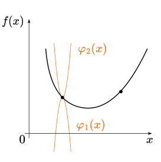
Иллюстрация Липшицевых парабол, между которыми зажата гладкая функция. Чаще нас интересует мажорирующая из них. Размер шага наискорейшего спуска для квадратичной функции.
Решаем задачу минимизации методом наискорейшего спуска f(x) = \frac{1}{2}x^TAx - b^Tx + c \to \min_{x \in \mathbb{R}^d} \nabla f = \frac{1}{2}(A + A^T)x - b
Из условия \nabla f(x_{k + 1})^T \nabla f(x_k) = 0 получаем: \alpha_k = \frac{2 \nabla f(x_k)^T \nabla f(x_k)}{\nabla f(x_k)^T (A + A^T) \nabla f(x_k)} = \frac{\nabla f(x_k)^T \nabla f(x_k)}{\nabla f(x_k)^T \nabla^2 f(x_k) \nabla f(x_k)}.
Характер сходимости градиентного спуска к локальному экстремуму для гладких невыпуклых функций в терминах \mathcal{O} от числа итераций метода.
\|\nabla f(x_k)\|^2 \sim \mathcal{O} \left( \frac{1}{k} \right).
Характер сходимости градиентного спуска для гладких выпуклых функций в терминах \mathcal{O} от числа итераций метода.
f(x_k) - f^* \sim \mathcal{O} \left( \frac{1}{k} \right).
Характер сходимости градиентного спуска для гладких и сильно выпуклых функций в терминах \mathcal{O} от числа итераций метода.
\|x_k - x^*\|^2 \sim \mathcal{O} \left( \left(1 - \frac{\mu}{L}\right)^k \right).
Связь спектра гессиана с константами сильной выпуклости и гладкости функции.
\quad \mu = \min\limits_{x \in \text{dom} f}\lambda_{\min}(\nabla^2 f(x)), \quad L = \max\limits_{x \in \text{dom} f}\lambda_{\max}(\nabla^2 f(x)).
Связь числа обусловленности матрицы квадратичной функции с параметрами сильной выпуклости и гладкости функции.
\varkappa = \frac{L}{\mu} = \frac{\lambda_{\max}(\nabla^2 f(x))}{\lambda_{\min}(\nabla^2 f(x))} = \frac{\lambda_{\max}(A)}{\lambda_{\min}(A)} \geq 1.
Условие Поляка-Лоясиевича (градиентного доминирования) для функций.
\exists \mu > 0: \quad \| \nabla f(x) \|^2 \geqslant 2\mu(f(x) - f^*) \quad \forall x, где f^* - минимум функции f(x).
Сходимость градиентного спуска для сильно выпуклых квадратичных функций. Оптимальные гиперпараметры.
Решаем задачу минимизации методом градиентного спуска. Пусть A \in \mathbb{S}_{++}^n \Rightarrow \nabla f = Ax - b. \begin{aligned} f(x) &= \frac{1}{2}x^TAx - b^Tx + c \to \min_{x \in \mathbb{R}^d} \\ x_{k + 1} &= x_k - \alpha (Ax_k - b) \\ \alpha_{opt} &= \frac{2}{\mu + L}, \text{ где } \mu = \lambda_{\min}(A), L = \lambda_{\max}(A) \\ \kappa &= \frac{L}{\mu} \geqslant 1 \\ \rho &= \frac{\kappa - 1}{\kappa + 1} \\ \| x_k - x^* \| &\leqslant \rho^k \| x_0 - x^* \| \\ \end{aligned}
Связь PL-функций и сильно выпуклых функций.
Пусть f \mu-сильно выпуклая и дифференицруемая \Rightarrow f \in PL.
Обратное неверно - f(x) = x^2 + 3\sin^2x \in PL, но не сильно выпуклая (она вообще не выпуклая).
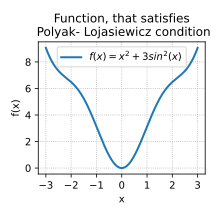
Пример невыпуклой PL функции Привести пример выпуклой, но не сильно выпуклой задачи линейных наименьших квадратов (возможно, с регуляризацией).
Рассмотрим задачу минимизации функции: \| A x - b \|^2 \to \min_{x \in \mathbb{R}^d}, где матрица A \in \mathbb{R}^{m\times n}, \ b\in \mathbb{R}^{m}, m < n (лежачая).
Привести пример сильно выпуклой задачи линейных наименьших квадратов (возможно, с регуляризацией).
Рассмотрим задачу минимизации функции: f(x) = \|Ax - b\|_2^2, где A \in \mathbb{R}^{n \times n} (ранг A = n). Эта функция сильно выпукла, так как гессиан положительно определен.
Привести пример выпуклой негладкой задачи линейных наименьших квадратов (возможно, с регуляризацией).
Рассмотрим задачу минимизации функции: f(x) = \|Ax - b\|_2^2 + \lambda \|x\|_1, где A \in \mathbb{R}^{n \times n}, \lambda > 0. Эта функция выпукла, но негладка из-за наличия \ell_1-регуляризации.
Нижние оценки для негладкой выпуклой оптимизации с помощью методов первого порядка в терминах \mathcal{O} от числа итераций метода.
f^{\text{best}}_k - f^* \sim \mathcal{O} \left( \frac{1}{\sqrt{k}} \right)
Нижние оценки для негладкой сильно выпуклой оптимизации с помощью методов первого порядка в терминах \mathcal{O} от числа итераций метода.
f^{\text{best}}_k - f^* \sim \mathcal{O} \left( \frac{1}{k} \right)
Отличие ускоренной и неускоренной линейной сходимости для методов первого порядка.
Функция Неускоренная Ускоренная Гладкая и выпуклая \mathcal{O}\left(\frac{1}{k}\right) \mathcal{O}\left(\frac{1}{k^2}\right) Гладкая и сильно-выпуклая (или PL) \mathcal{O}\left((1 - \frac{\mu}{L})^k\right) \mathcal{O}\left((1 - \sqrt{\frac{\mu}{L}})^k\right) Формулировка метода тяжелого шарика (Поляка) для квадратичной функции. Характер сходимости. Оптимальные гиперпараметры.
Задача: f(x) = \frac{1}{2} x^T A x - b^T x \rightarrow \min\limits_{x \in \mathbb{R}^d}, \ f(x), \lambda(A) \in [\mu; L]. x_{k+1} = x_{k} −\alpha\nabla f(x_{k}) + \beta(x_k−x_{k−1}), \qquad 0 < \beta < 1. Оптимальные гиперпараметры: \alpha^* = \dfrac{4}{(\sqrt{L} + \sqrt{\mu})^2} \qquad \beta^* = \left(\dfrac{\sqrt{L} - \sqrt{\mu}}{\sqrt{L} + \sqrt{\mu}}\right)^2. Характер сходимости: \|x_k - x^*\|_2 \leq \left( \dfrac{\sqrt{\kappa} - 1}{\sqrt{\kappa} + 1} \right)^k \|x_0 - x^*\|
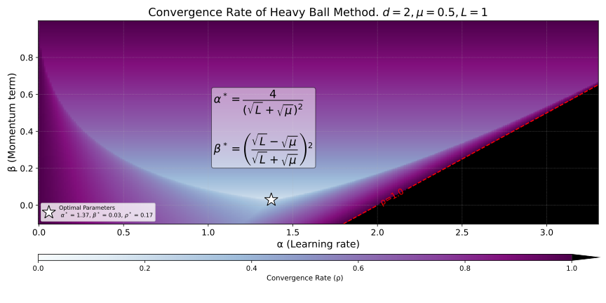
Сходимость метода тяжелого шарика в зависимости от \alpha и \beta Формулировка метода тяжелого шарика (Поляка) для гладкой выпуклой/сильно выпуклой функций. Характер сходимости в терминах \mathcal{O} от числа итераций метода.
Задача: f(x) = \frac{1}{2} x^T A x - b^T x \rightarrow \min\limits_{x \in \mathbb{R}^d}, \ f(x), \lambda(A) \in [\mu; L]. x_{k+1} = x_{k} −\alpha\nabla f(x_{k}) + \beta(x_k−x_{k−1}), \qquad 0 < \beta < 1.
Характер сходимости для произвольных выпуклых гладких функций: глобальный сублинейный \mathcal{O}(\frac1k). Для сильно выпуклых гладких функций характер сходимости глобальный линейный. Метод не имеет глобальной ускоренной сходимости для произвольных гладких (сильно) выпуклых функций.
Ускоренный градиентный метод Нестерова для выпуклых гладких функций.
Рассматриваем задачу f(x) \rightarrow \min\limits_{x}, где f : \mathbb{R}^n \rightarrow \mathbb{R} выпуклая и L-гладкая. Алгоритм Нестерова ускоренного градиентного спуска (NAG) имеет вид (x_0 = y_0,\ \lambda_0 = 0): \begin{aligned} &\textbf{Обновление градиента: } &y_{k+1} &= x_k - \frac{1}{L} \nabla f(x_k) \\ &\textbf{Экстраполяция: } &x_{k+1} &= (1 - \gamma_k)y_{k+1} + \gamma_k y_k \\ &\textbf{Экстраполяция веса: } &\lambda_{k+1} &= \frac{1 + \sqrt{1 + 4\lambda_k^2}}{2} \\ &\gamma_k &= \frac{1 - \lambda_k}{\lambda_{k+1}} \end{aligned} Метод сходится со скоростью \mathcal{O}\left(\frac{1}{k^2}\right), а именно: f(y_k) - f^* \leqslant\frac{2L \|x_0 - x^*\|_2^2}{k^2}
Ускоренный градиентный метод Нестерова для сильно выпуклых гладких функций.
Рассматриваем задачу f(x) \rightarrow \min\limits_{x}, где f : \mathbb{R}^n \rightarrow \mathbb{R} - \mu-сильно выпуклая и L-гладкая. Алгоритм Нестерова ускоренного градиентного спуска (NAG) имеет вид (x_0 = y_0): \begin{aligned} &\textbf{Обновление градиента: } &y_{k+1} &= x_k - \frac{1}{L} \nabla f(x_k) \\ &\textbf{Экстраполяция: } &x_{k+1} &= (1 - \gamma_k)y_{k+1} + \gamma_k y_k \\ &\textbf{Экстраполяция веса: } &\gamma_k &= \frac{\sqrt{L} - \sqrt{\mu}}{\sqrt{L} + \sqrt{\mu}} \end{aligned} Метод сходится линейно, а именно: f(y_k) - f^* \leqslant\frac{\mu + L}{2}\|x_0 - x^*\|^2_2 \exp \left(-\frac{k}{\sqrt{\kappa}}\right), \quad \kappa = \frac{L}{\mu}
A-сопряженность двух векторов. A-ортогональность. Скалярное произведение \langle \cdot, \cdot \rangle_A.
A-ортогональность (сопряженность): x \perp_A y \iff x^T A y = 0.
Процедура ортогонализации Грама-Шмидта.
Пусть a_1, \ldots, a_n - ЛНЗ векторы и \text{proj}_ba - оператор проекции a на b, определенный как \text{proj}_ba = \frac{\langle a, b \rangle}{\langle b, b \rangle} b, Ортогонализация Грама-Шмидта: \begin{aligned} b_1 &= a_1 \\ b_2 &= a_2 - \text{proj}_{b_1}a_2 \\ b_3 &= a_3 - \text{proj}_{b_1}a_3 - \text{proj}_{b_2} a_3 \\ \ldots \\ b_n &= a_n - \sum_{i=1}^{n-1}\text{proj}_{b_i}a_n \end{aligned}
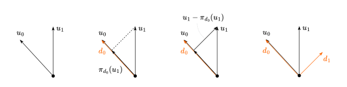
Метод сопряженных направлений.
Рассматриваем задачу f(x) = \frac12 x^T Ax - b^T x + c \rightarrow \min\limits_{x\in\mathbb{R}^d}
Идея
- В изотропном A=I мире, наискорейший спуск стартующий из произвольной точки в любом пространстве натянутом на линейную оболочку из n ортогональных ЛН векторов будет сходится за n шагов в точной арифметике. Мы попытаемся в случае A \neq I провести A-ортогональнализацию, чтобы “наискорейшим” образом спускаться в измененном базисе.
- Предположим имеется набор из n линейно независимых A-ортогональных векторов(направлений) d_0, \ldots, d_{n-1} (которые, например, были получены в ходе A-ортогонализации Г-Ш).
- Мы хотим создать метод, который переходит от x_0 к x^* по указанным ортогональным направлениям с некоторыми шагами, т.е. x_0 - x^* = \sum\limits_{i=0}^{d-1}\alpha_i d_i, где \alpha_i - из решения задачи линейного поиска.
Метод сопряженных градиентов.
Рассматриваем задачу f(x) = \frac12 x^T Ax - b^T x + c \rightarrow \min\limits_{x\in\mathbb{R}^d} Метод сопряженных градиентов:
- r_0:= b - A x_0
- \text{if } r_0 \text{sufficiently small, then return } x_0 \text{ as result}
- d_0 := r_0
- k := 0
- \text{while } r_{k+1} \text{ is not sufficiently small}:
- \alpha_k := \frac{r_k^Tr_k}{d_k^TAd_k}
- x_{k+1} := x_k + \alpha_k d_k
- r_{k+1} := r_k - \alpha_k A d_k
- \beta_k := \frac{r^T_{k+1}r_{k + 1}}{r_k^Tr_k}
- d_{k + 1} := r_{k + 1} + \beta_k d_k
- k := k + 1
- \text{return } x_{k+1} \text{ as result.}
Зависимость сходимости метода сопряженных градиентнов от спектра матрицы.
Если матрица A имеет только r различных собственных чисел, тогда метод сопряжённых градиентов сходится за r итераций.
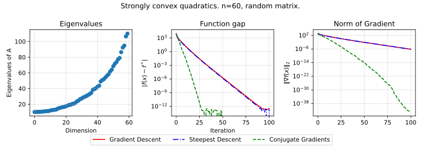 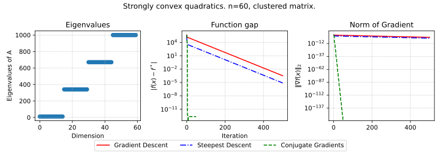
Характер сходимости метода сопряженных градиентов в терминах \mathcal{O} от числа итераций метода.
\| x_k - x^* \|_{A} \leqslant2 \left(\frac{\sqrt{\kappa(A)} - 1}{\sqrt{\kappa (A)} + 1}\right)^k \|x_0 - x^*\|_{A} Имеет место оценка числа итераций при заданной точности \varepsilon: \|x_k - x^*\|_A \leqslant \varepsilon \|x_0 - x^*\|_A k \leqslant \left\lceil \frac{1}{2} \sqrt{\kappa(A)} \ln\Bigr( \frac{2}{\varepsilon} \Bigl) \right\rceil
Метод Полака-Рибьера.
Используется для минимизации неквадратичных выпуклых функций.
Без знания аналитического выражения шаг 2 алгоритма метода сопряжённых направлений вместо подсчёта \alpha из минимизации f(x_k + \alpha_k d_k) находит \alpha обычным линейным поиском. \beta_k = \frac{\nabla f(x_{k+1})^T ( \nabla f(x_{k+1}) - \nabla f(x_k))}{d_k ^T ( \nabla f(x_{k+1}) - \nabla f(x_k))}
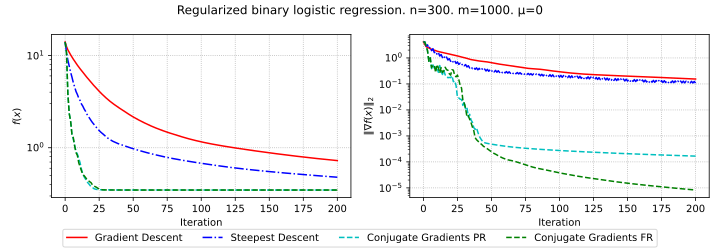

Метод Ньютона.
Рассматривается задача минимизации функции с невырожденным гессианом. x_{k+1} = x_k - [\nabla^2f(x_k)]^{-1} \nabla f(x_k)
Сходимость метода Ньютона для квадратичной функции.
Метод Ньютона сходится для квадратичной функции за одну итерацию, при условии, что гессиан невырожден. Следует из метода Ньютона квадратичной тейлоровской аппроксимации: f(x) = f(x_k) + \nabla f(x_k)^T(x - x_k) + \frac{1}{2} (x-x_k)^T \nabla^2 f(x_k) (x-x_k), \quad \nabla f(x_{k+1}) = 0
Характер сходимости метода Ньютона для сильно выпуклых гладких функций - куда и как сходится.
Пусть f(x) сильно выпукла дважды непрерывно дифференцируема на \mathbb{R}^n и выпоняются неравенства: \mu I_n\preceq \nabla ^2f(x) \preceq L I_n. Тогда метод Ньютона с постоянным шагом локально сходится к решению со сверхлинейной скоростью. Если вдобавок, Гессиан M-Липшицев, тогда метод сходится локально к x^* с квадратичной скоростью.
Демпфированный метод Ньютона.
x_{k+1} = x_k - \alpha_k \left[\nabla^2f(x_k)\right]^{-1} \nabla f(x_k),\;\;\; \alpha_k \in [0,1] где \alpha_k находят с помощью линейного поиска. Сходимость глобальная.
Идея квазиньютоновских методов. Метод SR-1.
\min_{x\in \R^{d}} f(x) Пусть x_{0} \in \mathbb{R}^n, B_{0} \succ 0. Для k = 1, 2, 3, \dots, повторим:
- Решить B_{k} d_{k} = -\nabla f(x_{k}) относительно d_k.
- Обновить x_{k+1} = x_{k} + \alpha_k d_{k}.
- Вычислить B_{k+1} из B_{k}. B_{k+1} = B_k + \frac{(\Delta y_k - B_k d_k)(\Delta y_k - B_k d_k)^T}{(\Delta y_k - B_k d_k)^T d_k}, \quad \Delta y_k = \nabla f(x_{k+1}) - \nabla f(x_{k}).
Проекция.
Проекция точки y \in \mathbb{R}^n \text{ на множество } S \subseteq \mathbb{R}^n \text{ это точка }\text{proj}_S(y) \in S: \text{proj}_S(y) = \arg \min\limits_{x \in S}\frac{1}{2}||x - y||^2_2
Достаточное условие существования проекции точки на множество.
Если S \subseteq \mathbb{R}^n - замкнутое множество, тогда проекция на множество S существует для любой точки.
Достаточное условие единственности проекции точки на множество.
Если S \subseteq \mathbb{R}^n - замкнутое выпуклое множество, тогда проекция на множество S единствена для каждой точки.
Метод проекции градиента.
Рассматривается задача f(x) \rightarrow \min\limits_{x \in S}, где S \subseteq \mathbb{R}^n. Метод проекции градиента — это метод оптимизации с проекцией на бюджетное множество S: x_{k+1} = \text{proj}_S(x_{k} - \alpha_k \nabla f(x_{k})), где \alpha_k — learning rate.
Критерий проекции точки на выпуклое множество (Неравенство Бурбаки-Чейни-Гольдштейна).
Проекция \text{proj}_S(x) точки x на выпуклое множество S удовлетворяет: \langle x - \text{proj}_S(x), y - \text{proj}_S(x) \rangle \leqslant0 \quad \forall y \in S.
Проекция как нерастягивающий оператор.
Проекция на выпуклое множество S является нерастягивающим оператором: \|\text{proj}_S(x) - \text{proj}_S(y)\| \leqslant \|x - y\| \quad \forall x, y.
Метод Франк-Вульфа.
Рассматриваем задачу f(x) \rightarrow \min\limits_{x \in S}. Метод Франк-Вульфа имеет вид: \begin{aligned} y_k &= \text{arg}\min_{x \in S} f^I_{x_k}(x) = \text{arg}\min_{x \in S} \langle\nabla f(x_k), x \rangle \\ x_{k+1} &= \gamma_k x_k + (1-\gamma_k)y_k \end{aligned} где \gamma_k - гиперпараметр. 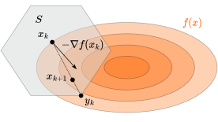
Характер сходимости метода проекции градиента для гладких выпуклых функций в терминах \mathcal{O} от числа итераций метода.
Для гладких выпуклых функций метод проекции градиента имеет сходимость порядка \mathcal{O}\left(\frac{1}{k}\right), где k — число итераций. То есть сходимость такая же, как и для безусловной задачи, но стоимость итерации может быть выше из-за проекции.
Характер сходимости метода проекции градиента для гладких сильно выпуклых функций в терминах \mathcal{O} от числа итераций метода.
Для гладких сильно выпуклых функций метод проекции градиента имеет линейную сходимость порядка \mathcal{O}\left(\left(1 - \frac{\mu}{L}\right)^k\right), где k — число итераций. То есть сходимость такая же, как и для безусловной задачи, но стоимость итерации может быть выше из-за проекции.
Характер сходимости метода Франк-Вульфа для гладких выпуклых функций в терминах \mathcal{O} от числа итераций метода.
Метод Франк-Вульфа для гладких выпуклых функций имеет сходимость порядка \mathcal{O}\left(\frac{1}{k}\right), где k — число итераций.
Характер сходимости метода Франк-Вульфа для гладких сильно выпуклых функций в терминах \mathcal{O} от числа итераций метода.
Для гладких сильно выпуклых функций метод Франк-Вульфа имеет сходимость порядка \mathcal{O}\left(\frac{1}{k}\right), где k — число итераций.
Субградиент. Субдифференциал.
Субградиент функции f в точке x — это вектор g, удовлетворяющий условию: f(y) \geqslant f(x) + g^T (y - x), \quad \forall y. Множество всех субградиентов в точке x называется субдифференциалом и обозначается как \partial f(x).
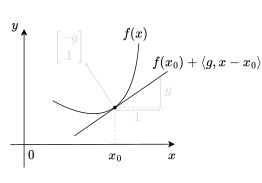
Субдифференциал функции ReLU. Субградиентный метод.
Субградиентный метод используется для минимизации выпуклых функций, которые могут быть негладкими. Итерационная формула метода: x_{k+1} = x_k - \alpha_k g_k, где g_k \in \partial f(x_k) — субградиент функции f в точке x_k, \alpha_k — шаг метода на k-й итерации.
Характер сходимости субградиентного метода для негладких выпуклых Липшицевых функций в терминах \mathcal{O} от числа итераций метода.
f^{\text{best}}_k - f^* \sim \mathcal{O} \left( \frac{1}{\sqrt{k}} \right)
Характер сходимости субградиентного метода для негладких сильно выпуклых Липшицевых функций в терминах \mathcal{O} от числа итераций метода. Стратегия выбора шага.
f^{\text{best}}_k - f^* \sim \mathcal{O} \left( \frac{1}{k} \right), \alpha_k = \frac{2}{\mu (k+1)}
Какому условию должна удовлетворять стратегия выбора шага, чтобы субградиентный метод сходился для выпуклых Липшицевых функций?
\sum_{i=1}^k \alpha_i = \infty, \quad \sum_{i=1}^k \alpha_i^2 < \infty
Нижние оценки для негладкой выпуклой оптимизации с помощью методов первого порядка в терминах \mathcal{O} от числа итераций метода.
f^{\text{best}}_k - f^* \sim \mathcal{O} \left( \frac{1}{\sqrt{k}} \right)
Нижние оценки для негладкой сильно выпуклой оптимизации с помощью методов первого порядка в терминах \mathcal{O} от числа итераций метода.
f^{\text{best}}_k - f^* \sim \mathcal{O} \left( \frac{1}{k} \right)
Проксимальный оператор.
\text{prox}_{f} (x_k) = \arg \min\limits_{x \in \mathbb{R}^n} \left[f(x) + \frac{1}{2} \|x - x_k \|_2^2\right]
Оператор проекции как частный случай проксимального оператора.
\text{proj}_S(y) : = \arg \min\limits_{x \in S} \frac{1}{2}\|x-y\|_2^2 Введём индикаторную функцию: \mathbb{I}_S(x) = \begin{cases} 0, & \text{if } x \; \in \; S, \\ \infty, & \text{else.} \end{cases} Перепишем оператор: \text{proj}_S(y) = \arg \min\limits_{x\in S} \left[ \frac{1}{2}\|x-y\|_2^2 + \mathbb{I}_S(x)\right] И, для сравнения, вспомним \text{prox}_{r} (x_k) = \arg \min\limits_{x \in \mathbb{R}^n} \left[\frac{1}{2} \|x - x_k \|_2^2 + r(x)\right].
Характер сходимости проксимального градиентного метода для гладких выпуклых функций f в терминах \mathcal{O} от числа итераций метода.
Рассматривается задача: \varphi(x) \rightarrow \min\limits_{x \in \mathbb{R}^n}, где \varphi(x) = f(x) +r(x), f(x) - гладкая выпуклая, r(x) - негладкая выпуклая, проксимально дружественная. x_{k+1} = \text{prox}_{\alpha r}\left(x_k -\alpha \nabla f(x_k)\right) Сходится за \mathcal{O}\left(\frac{1}{k} \right).
Характер сходимости проксимального градиентного метода для гладких сильно выпуклых функций f в терминах \mathcal{O} от числа итераций метода.
Рассматривается задача: \varphi(x) \rightarrow \min\limits_{x \in \mathbb{R}^n}, где \varphi(x) = f(x) +r(x), f(x) - гладкая выпуклая, r(x) - негладкая выпуклая, проксимально дружественная. \|x_k - x^*\|^2 \sim \mathcal{O} \left( \left(1 - \frac{\mu}{L}\right)^k \right) где \mu - константа сильной выпуклости функции f, L - константа гладкости функции f.
Аналитическое выражение для \text{prox}_{\lambda \|x\|_1}.
\begin{aligned} r(x) &= \lambda \|x\|_1, \quad \lambda > 0 \\ [\text{prox}_r(x)]_i &= [|x_i - \lambda]_+ \cdot \text{sign}(x_i) \end{aligned}
Аналитическое выражение для \text{prox}_{\frac{\mu}{2} \|x\|_2^2}.
\begin{aligned} r(x) &= \frac{\mu}{2} \|x\|_2^2\\ \text{prox}_r(x) &= \frac{x}{1 - \mu} \end{aligned}
Проксимальный оператор как нерастягивающий оператор.
Проксимальный оператор \text{prox}_r(x) строго нерастягивающий (FNE - firmly non-expansive): \left\|\text{prox}_r(x)-\text{prox}_r(y)\right\|_2^2 \leqslant \left\langle\text{prox}_r(x)-\text{prox}_r(y), x-y\right\rangle и нерастягивающий: \left\|\text{prox}_r(x)-\text{prox}_r(y)\right\|_2 \leqslant \|x-y\|_2
Характер сходимости ускоренного проксимального градиентного метода для гладких выпуклых функций f в терминах \mathcal{O} от числа итераций метода.
\varphi(x) = f(x) + r(x), f(x) - выпуклая, L-гладкая, r(x) - выпуклая и определен \text{prox}_{\alpha r}(x_k) \Rightarrow \varphi(x_k) - \varphi^* \leqslant \frac{L\|x_0 - x^*\|^2}{2k^2} \sim \mathcal{O}\left(\frac{1}{k^2}\right)
Метод стохастического градиентного спуска.
Решаемая задача: f(x) \rightarrow \min\limits_{x \in \mathbb{R}^p}, где f(x) =\frac{1}{n} \sum\limits_{i=1}^n f_i(x) \text{SGD:}\quad x_{k+1} = x_k - \alpha_k \nabla f_{i_k}(x), гдe i_k - случайно выбранный индекс. Если \mathbb{P}(i_k = i) = \frac{1}{n}, то \mathbb{E}[\nabla f_{i_k}(x)] = \nabla f(x)
Идея мини-батча для метода стохастического градиентного спуска. Эпоха.
Разделим данные размера N на k мини-батчей (выборок) размера B_k, на каждой итерации посчитаем градиент мини-батча с использованием параллелизма. За \frac{N}{k} итераций пройдёмся по всей выборке. Эпоха - набор k итераций с батчем размера B_k = \frac{N}{k}. x_{k + 1} = x_k - \frac{1}{|B_k|} \sum_{i \in B_k} - \text{шаг мини-батча}. C увеличением размера мини-батча время на эпоху уменьшается до тех пор, пока нам хватает памяти (в случае наличия параллелизма).

Характер сходимости стохастического градиентного спуска для гладких выпуклых функций в терминах \mathcal{O} от числа итераций метода.
f - гладкая и выпуклая \Rightarrow \mathcal{O}\left(\frac{1}{\varepsilon^2}\right), \mathcal{O}\left(\frac{1}{\sqrt{k}}\right)
Характер сходимости стохастического градиентного спуска для гладких PL-функций в терминах \mathcal{O} от числа итераций метода.
f \in PL \Rightarrow \mathcal{O}\left(\frac{1}{k}\right), \mathcal{O}\left(\frac{1}{\varepsilon}\right)
Характер работы стохастического градиентного спуска с постоянным шагом для гладких PL-функций.
Пусть \min_{x \in \mathbb{R}^p} f(x) = \min_{x \in \mathbb{R}^p}\frac{1}{n} \sum_{i=1}^n f_i(x) при использовании стохастического градиентного спуска с постоянным шагом \alpha x_{k+1} = x_k - \alpha \nabla f_{i_k}(x_k) имеем следующую оценку \mathbb{E}[f(x_{k+1}) - f^*] \leq (1 - 2\alpha \mu)^k[f(x_{0}) - f^*] + \frac{L \sigma^2 \alpha }{ 4 \mu}. Характер сходимости - линейный до некоторого шара несходимости, в котором будут происходить осцилляции и сходимости не будет.
Основная идея методов уменьшения дисперсии.
Рассматриваем случаную величину X. Хотим уменьшить у неё дисперсию. Пусть Y - тоже случайная вличина с известным мат. ожиданием. Рассмотрим новую с.в Z_{\alpha} = \alpha (X − Y) + \mathbb{E}[Y]
- \mathbb{E}[Z_\alpha] = \alpha \mathbb{E}[X] + (1-\alpha)\mathbb{E}[Y]
- \text{var}(Z_\alpha) = \alpha^2 \left(\text{var}(X) + \text{var}(Y) - 2\text{cov}(X, Y)\right)
- \alpha = 1: нет смещения мат.ожидания
- \alpha < 1: потенциальное смещение (но уменьшение дисперсии).
- Полезно, если Y коррелирует с X.
Метод SVRG.
- Пусть X = \nabla f_{i_k}(x_{m-1}) - стох. градиент, а Y = \nabla f_{i_k}(\tilde{x}), с \alpha = 1 и \tilde{x} хранятся в памяти.
- \mathbb{E}[Y] = \frac{1}{n} \sum_{i=1}^n \nabla f_i(\tilde{x}) полный градиент в \tilde{x};
- X - Y = \nabla f_{i_k}(x^{(m-1)}) - \nabla f_{i_k}(\tilde{x})
Получаем алгоритм:
- Initialize: \tilde{x} \in \mathbb{R}^d
- For i_{epoch} = 1 to
# of epochs - Compute all gradients \nabla f_i(\tilde{x}); store \nabla f(\tilde{x}) = \frac{1}{n} \sum_{i=1}^n \nabla f_i(\tilde{x})
- Initialize x_0 = \tilde{x}
- For
t = 1tolength of epochs (m)- Pick i_t \in \{1, \dots, n\} uniformly at random
- x_t = x_{t-1} - \alpha \left[\nabla f_{i_t}(x_{t-1}) - \nabla f_{i_t}(\tilde{x}) + \nabla f(\tilde{x})\right]
- Update \tilde{x} = x_m
Метод SAG.
Задача: f(x) = \frac{1}{n} \sum_{i=1}^n f_{i}(x)
- Initialize x^{(0)} and g_i^{(0)} = \nabla f_i(x^{(0)})
- At steps k = 1, 2, 3, \dots pick random i_k \in \{1, \dots n\}
- g_{i_k}^{(k)} = \nabla f_{i_k}(x^{(k-1)})
- Set all other g_i^{(k)} = g_i^{(k-1)}, i \neq i_k
- Update: g^{(k)} = g^{(k-1)} + \frac{1}{n} (g_{i_k}^{(k)} - g_{i_k}^{(k-1)}) = \frac{1}{n}\sum\limits_{i=1}^n g_i^{(k)}
- x^{(k)} = x^{(k-1)} - \alpha ^k g^{(k)}
PS: стоимость итерации как в обычном SGD, но платим за это памятью.
Сходимость в выпуклом случае: f(x_{\text{mean}}^{(k)}) - f^* \leq \frac{48n|f(x^{(0)}) - f^*| + 128L\|x^{(0)} - x^*\|^2}{k} = O(\frac{1}{k})
Скорость в сильно выпуклом случае с параметром \mu:
\mathbb{E}\left[f(x^{(k)}) - f^*\right] \leq \left(1 - \min\left(\frac{\mu}{16L}, \frac{1}{8n}\right)\right)^k (\frac{3}{2}(f(x^{(0)}) - f^*) + \frac{4L}{n} \|x^{(0)} - x^*\|^2) = O(\gamma ^k)
Метод Adagrad.
Задача: f(x) = \frac{1}{n} \sum_{i=1}^n f_{i}(x). Пусть g^{(k)} = \nabla f_{i_k}(x^{(k-1)}), и обновляем for j = 1, \dots, p: \begin{aligned} v^{(k)}_j &= v^{k-1}_j + \left(g_j^{(k)}\right)^2 \\ x_j^{(k)} &= x_j^{(k-1)} - \alpha \frac{g_j^{(k)}}{\sqrt{v^{(k)}_j + \varepsilon}} \end{aligned}
Постоянная \varepsilon обычно устанавливается равным 10^{-6} чтобы гарантировать, что мы не будем иметь проблемы от деления на ноль или чрезмерно больших размеров шага.
Метод RMSProp.
Задача: f(x) = \frac{1}{n} \sum\limits_{i=1}^n f_{i}(x)
Усовершенствование AdaGrad, учитывающее его агрессивную, монотонно снижающуюся скорость обучения. Использует скользящее среднее квадратов градиентов для корректировки скорости обучения для каждого веса. Пусть g^{(k)} = \nabla f_{i_k}(x^{(k-1)}) and update rule for j = 1, \dots, p: v^{(k)}_j = \gamma v^{(k-1)}_j + (1-\gamma) (g_j^{(k)})^2 x_j^{(k)} = x_j^{(k-1)} - \alpha \frac{g_j^{(k)}}{\sqrt{v^{(k)}_j + \varepsilon}}
Метод Adadelta.
Задача: f(x) = \frac{1}{n} \sum_{i=1}^n f_{i}(x)
Расширение RMSProp, направленное на снижение его зависимости от глобальной скорости обучения, устанавливаемой вручную. Вместо накопления всех прошлых квадратов градиентов, Adadelta ограничивает окно накопленных прошлых градиентов некоторым фиксированным размером $ w $. Механизм обновления не требует скорости обучения \alpha: \begin{aligned} v^{(k)}_j &= \gamma v^{(k-1)}_j + (1-\gamma) \left(g_j^{(k)}\right)^2 \\ \tilde{g}_j^{(k)} &= \frac{\sqrt{{\Delta x_j^{(k-1)}} + \varepsilon}}{\sqrt{v^{(k)}_j+ \varepsilon}} g_j^{(k)} \\ x_j^{(k)} &= x_j^{(k-1)} - \tilde{g}_j^{(k)} \\ \Delta x_j^{(k)} &= \rho \Delta x_j^{(k-1)} + (1-\rho) \left(\tilde{g}_j^{(k)}\right)^2 \end{aligned}
Метод Adam.
Задача: f(x) = \frac{1}{n} \sum\limits_{i=1}^n f_{i}(x) \begin{aligned} m_j^{(k)} &= \beta_1 m_j^{(k-1)} + (1-\beta_1) g_j^{(k)} \\ v_j^{(k)} &= \beta_2 v_j^{(k-1)} + (1-\beta_2) (g_j^{(k)})^2 \\ \tilde{m}_j &= \frac{m_j^{(k)}}{1-\beta_1^k}, \quad \hat{v}_j = \frac{v_j^{(k)} }{1-\beta_2^k} \\ x_j^{(k)} &= x_j^{(k-1)} - \alpha \frac{\tilde{m}_j}{\sqrt{\hat{v}_j} + \varepsilon} \end{aligned}
Метод AdamW.
Решает проблему с \ell_2 регуляризацией в адаптивных оптимизаторах, таких как Adam. Стандартная \ell_2 регуляризация добавляет \lambda \|x\|^2 к функции потерь, что приводит к градиентному члену \lambda x. В Adam этот член масштабируется вместе с адаптивным шагом обучения \left(\sqrt{\hat{v}_j} + \epsilon\right), связывая демпфирование с градиентами.
AdamW отделяет демпфирование от шага адаптации градиента. m_j^{(k)} = \beta_1 m_j^{(k-1)} + (1-\beta_1) g_j^{(k)} v_j^{(k)} = \beta_2 v_j^{(k-1)} + (1-\beta_2) (g_j^{(k)})^2 \hat{m}_j = \frac{m_j^{(k)}}{1-\beta_1^k}, \quad \hat{v}_j = \frac{v_j^{(k)} }{1-\beta_2^k} x_j^{(k)} = x_j^{(k-1)} - \alpha \left( \frac{\hat{m}_j}{\sqrt{\hat{v}_j} + \epsilon} + \lambda x_j^{(k-1)} \right)
Метод Shampoo.
- Вычисляем градиент G_k.
- Обновляем статистики L_k = \beta L_{k-1} + (1-\beta) G_k G_k^T и R_k = \beta R_{k-1} + (1-\beta) G_k^T G_k.
- Вычисляем предобуславливатели P_L = L_k^{-1/4} и P_R = R_k^{-1/4}. (Обратный корень матрицы)
- Обновляем: W_{k+1} = W_k - \alpha P_L G_k P_R.
Метод Muon.
W_{t+1} = W_t - \eta UV^\top, где G = U \Sigma V^\top - сингулярное разложение матрицы градиентов соответствующей текущему слою.
Как сравниваются методы в AlgoPerf Benchmark.
Для бенчмарка формулируется несколько различных прикладных задач и моделей. Для каждой из них задаётся необходимый уровень целевой функции, который должен быть достигнут за отведённое время.
Для каждой задачи выбирается лучший метод и время его работы обозначается за t_{best}. Для всех методов строят график процента решенных задач в зависимости от коэффицента \tau, который показывает во сколько раз больше времени потрачено по сравнению с лучшим методом на данной задаче t = \tau t_{best}.
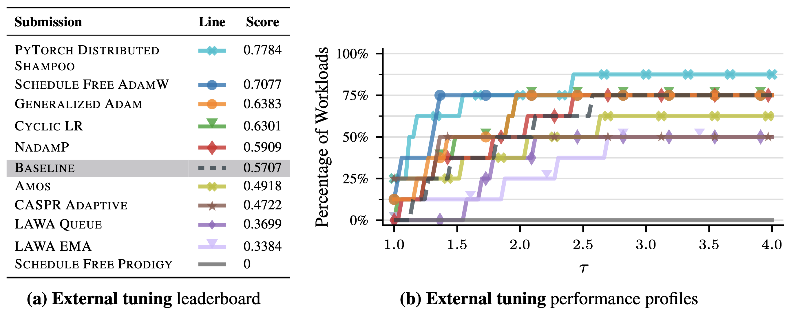
Идея проекции функции потерь нейронной сети на прямую, плоскость.
Пусть L(w) - функция от w \in \mathbb{R}^n. Введем проецию на линию: L(\alpha) = L(w_0 + \alpha w_1) для некоторго w_1 \in \mathbb{R}^n. Аналогично можно ввести проекцию на плоскость L(\alpha, \beta) = L(w_0 + \alpha w_1 + \beta w_2) для некоторых w_1, w_2 \in \mathbb{R}^n.
- Два случайных вектора большой размерности с высокой вероятностью ортогональны друг другу.
- Если проекция функции невыпукла, то и исходная функция невыпукла. Таким образом можно заглянуть на устройство функции от многих переменных.
Grokking.
Grokking при обучении нейронных сетей — это явление, когда модель после продолжительного обучения сначала демонстрирует плохую обобщающую способность на новых данных, несмотря на хорошее качество на обучающем наборе. Затем, после дальнейшего обучения, модель неожиданно начинает показывать значительно лучшую производительность и на тестовых данных. Это подразумевает, что модель в конечном итоге находит более глубокие и универсальные закономерности, которые позволяют ей лучше обобщать на неизвестные данные.
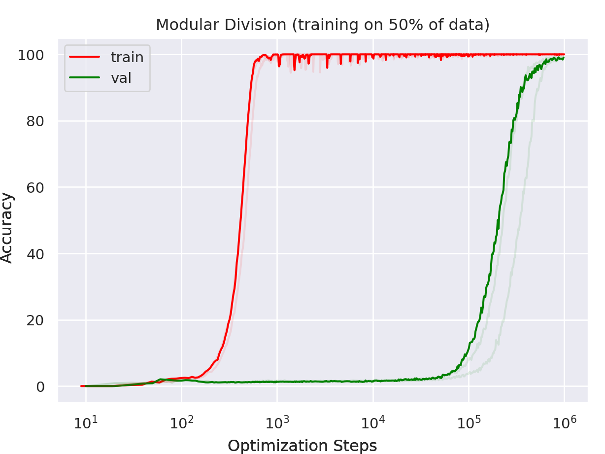
Точность решения задачи целочисленного сложения языковой моделью. Double Descent.
Double descent — это явление, наблюдаемое при обучении нейронных сетей, когда увеличение количества параметров модели сначала приводит к снижению ошибки на обучающем и тестовом наборах (классическое поведение bias-variance tradeoff), затем происходит резкое увеличение ошибки (первая точка перегиба, связанная с переобучением), после чего, с дальнейшим увеличением количества параметров, ошибка снова начинает уменьшаться, формируя вторую “волну” улучшения. Это поведение отличается от традиционной U-образной кривой, и его понимание важно для эффективной настройки гиперпараметров и выбора архитектуры модели.
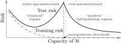
Иллюстрация зависимости обобщающей способности модели от размера. Взрыв/Затухание градиентов при обучении глубоких нейронных сетей.
При обучении глубоких нейронных сетей часто возникают проблемы взрыва и затухания градиентов, что приводит к медленной или нестабильной сходимости модели. Эти явления можно описать с помощью производной функции ошибки L по весам сети W. Пусть L - функция потерь, а \frac{\partial L}{\partial W} - градиенты, используемые для обновления весов. Когда сеть имеет много слоев, градиенты вычисляются как произведение матриц Якоби каждого слоя: \frac{\partial L}{\partial W} = \frac{\partial L}{\partial z^{(n)}} \cdot \frac{\partial z^{(n)}}{\partial z^{(n-1)}} \cdots \frac{\partial z^{(2)}}{\partial z^{(1)}} \cdot \frac{\partial z^{(1)}}{\partial W}, где z^{(i)} - активации i-го слоя. Если значения производных \frac{\partial z^{(i+1)}}{\partial z^{(i)}} в среднем больше единицы, градиенты начинают экспоненциально увеличиваться при обратном распространении, вызывая взрыв градиентов. Напротив, если значения производных меньше единицы, градиенты экспоненциально уменьшаются, что приводит к их затуханию.
Идея gradient checkpointing.
Gradient checkpointing — это техника, которая позволяет значительно снизить потребление памяти при обучении глубоких нейронных сетей за счет стратегического пересчета промежуточных активаций во время обратного распространения ошибки. В стандартном процессе обучения с использованием обратного распространения ошибка вычисляется для каждого слоя и промежуточные активации сохраняются в памяти, что требует O(N) памяти, где N — количество слоев в сети.
При gradient checkpointing вместо сохранения активаций для всех слоев, мы сохраняем их только для некоторых стратегически выбранных слоев, называемых чекпоинтами. Активации для остальных слоев пересчитываются на этапе обратного распространения, что снижает общее потребление памяти. Если мы сохраняем активации через каждые k слоев, то потребление памяти уменьшается до O(\frac{N}{k}). Однако, это приводит к дополнительным вычислительным затратам, так как активации некоторых слоев пересчитываются несколько раз.
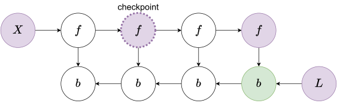
Идея аккумуляции градиентов.
Аккумуляция градиентов — это метод, используемый для эффективного обучения больших нейросетевых моделей, когда ограничен объем доступной видеопамяти. Вместо обновления весов модели после каждого батча данных, как это происходит в стандартном стохастическом градиентном спуске (SGD), градиенты накапливаются в течение нескольких батчей. Затем обновление весов происходит только после накопления градиентов от нескольких батчей, эквивалентных одному большому батчу. Этот подход позволяет использовать меньший объем памяти, так как не требуется хранить большие батчи данных в видеопамяти, при этом достигается сходный с большим батчем эффект на обновление весов, что способствует более стабильному и эффективному обучению модели.
Зачем увеличивать батч при обучении больших нейросетевых моделей. Warmup.
Если увеличивать размер батча, то, при наличии параллелизма, время прохождения эпохи уменьшается. Эмпирическое правило: когда размер минибатча увеличился в k раз, learning rate также необходимо увеличить в k раз (linear scaling rule). Для адаптивных методов эмпирически используется шкалирование базового learning rate в \sqrt{k} раз (square root scaling rule).
Warmup — это техника, применяемая к процессу обучения моделей, чтобы стабилизировать и улучшить обучение на ранних этапах. В процессе Warmup начальное значение скорости обучения постепенно увеличивается от низкого значения до целевого значения в течение нескольких первых эпох или шагов. Эта техника помогает избежать проблем, связанных с нестабильностью градиентов и резкими изменениями параметров модели в самом начале обучения.

При увеличении размера батча время на эпоху уменьшается до тех пор, пока нам хватает памяти (в случае наличия параллелизма). Идея cooldown фазы для построения расписания learning rate. В чём преимущество по сравнению с cosine scheduler?
Подход к расписанию learning rate, заключающийся в постепенном уменьшении learning rate в конце обучения. Позволяет избежать знания длительности обучения, в отличие от cosine scheduler.
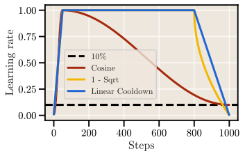
Дифференциальное уравнение градиентного потока.
\frac{dx}{dt} = -\nabla f(x)
Характер сходимости траектории градиентного потока для выпуклых функций в терминах \mathcal{O}\left( t \right).
f(x(t)) - f^* \leqslant \frac{1}{2t}\|x(0) - x^*\|^2 \quad \Rightarrow \quad \mathcal{O}\left(\frac{1}{t}\right).
Характер сходимости траектории градиентного потока для PL-функций в терминах \mathcal{O}\left( t \right).
f(x(t)) - f^* \leqslant \exp\{-2\mu t\}(f(x(0)) - f^*) \quad \Rightarrow \quad \mathcal{O}\left(\exp\{-2\mu t\}\right).
Дифференциальное уравнение Нестеровского ускоренного градиентного потока.
\ddot{X}(t) + \frac{3}{t}\dot{X}(t) + \nabla f(X(t)) = 0.
Метод двойственного градиентного подъема.
Рассматривается задача: f(x) \rightarrow \min\limits_{Ax = b}. Двойственная задача: -f^*(-A^Tu) - b^Tu \rightarrow \max\limits_{u}, где f^*(y) = \max\limits_{x}\left[y^T x - f(x)\right] - сопряженная функция. Определим g(u) = -f^*(-A^Tu) - b^Tu, тогда \partial g(u) = A\partial f^*(-A^Tu) - b. Перепишем это в виде \partial g(u) = Ax - b, где x \in \arg \min\limits_{z}\left[f(z) + u^TAz\right]. Тогда определим метод двойственного градиентного подъема: \begin{aligned} x_k &\in \arg \min\limits_{x}\left[f(x) + (u_{k-1})^TAx\right] \\ u_k &= u_{k-1} + \alpha_k(Ax_k - b). \end{aligned}
Связь константы сильной выпуклости f и гладкости f^*.
Пусть f - замкнутая и выпуклая. Тогда f - сильно выпуклая с константой выпуклости \mu \Leftrightarrow \nabla f^* - липшицев с параметром \frac{1}{\mu}.
Идея dual decomposition.
Рассматриваем задачу \sum\limits_{i=1}^Bf_i(x_i) \rightarrow \min\limits_{Ax = b}. Здесь x = (x_1, \ldots, x_B)^T \in \mathbb{R}^n разделены на B блоков переменных, каждый x_i \in \mathbb{R}^{n_i}. Разделим аналогично матрицу A: A = \left[A_1, \ldots, A_B\right], где A_i \in \mathbb{R}^{m\times n_i}. Тогда x^{\text{new}} \in \arg\min\limits_{x}\left(\sum_{i=1}^B f_i(x_i) + u^TAx\right) \Rightarrow x^{\text{new}}_i \in \arg\min\limits_{x_i}\left(f_i(x_i) + u^TA_ix_i\right), \quad i = \overline{1,B} Тогда метод двойственного подъема запишется следующим образом: \begin{aligned} x^{k}_i &\in \arg\min\limits_{x_i}\left(f_i(x_i) + u^TA_ix_i\right), \quad i = \overline{1,B} \\ u^k &= u^{k-1} + \alpha_k\left(\sum_{i=1}^B A_ix_i^k - b\right). \end{aligned}
Метод двойственного градиентного подъема для линейных ограничений-неравенств.
Рассматриваем задачу \sum\limits_{i=1}^Bf_i(x_i) \rightarrow \min\limits_{\sum\limits_{i=1}^BA_ix_i \preccurlyeq b}.
\begin{aligned} x_i^k &\in \arg \min\limits_{x_i}\left[f_i(x_i) + (u^{k-1})^TA_ix_i\right], \quad i = \overline{1,B} \\ u^k &= \left(u^{k-1} + \alpha_k\left[\sum\limits_{i=1}^BA_ix_i^k - b\right]\right)_+, \end{aligned}
где (u)_+ обозначает (u_+)_i = \max\{0, u_i\}, i=\overline{0,m}.
Метод модифицированной функции Лагранжа.
Рассматриваем задачу f(x) + \frac{\rho}{2}\|Ax - b\|^2 \rightarrow \min\limits_{Ax = b}, где \rho > 0 - параметр. Тогда метод двойственного градиентного подъема имеет вид: \begin{aligned} x_k &= \arg \min\limits_{x}\left[f(x) + (u_{k-1})^TAx + \frac{\rho}{2}\|Ax - b\|^2\right] \\ u_k &= u_{k-1} + \rho(Ax_k - b). \end{aligned} В этом случае имеет место следующее: \begin{aligned} L &= f(x) + u^T(Ax - b) + \frac{\rho}{2}\|Ax - b\|^2 \\ x_k &= \arg \min\limits_{x}\left[f(x) + (u_{k-1})^TAx + \frac{\rho}{2}\|Ax - b\|^2\right] \\ 0 &\in \partial f(x_k) + A^T(u_{k-1} + \rho(Ax_k - b)) \\ 0 &\in \partial f(x_k) + A^Tu_k. \end{aligned}
Метод ADMM.
Рассматриваем задачу \begin{aligned} \min_{x,z}& \; f(x) + g(z) \\ \text{s.t. }& Ax + Bz = c \end{aligned} После добавления штрафа за выход из бюджетного множества имеем f(x) + g(z) + \|Ax + Bz - c\|^2 \rightarrow \min\limits_{Ax + Bz = c}, где \rho > 0 - параметр. Тогда функция Лагранжа имеет вид: L_\rho(x, z, u) = f(x) + g(z) + u^T(Ax + Bz - c) + \frac{\rho}{2}\|Ax + Bz - c\|^2. И шаг ADMM записывается как: \begin{aligned} x_k &= \arg\min\limits_{x}L_\rho(x, z_{k-1}, u_{k-1}) \\ z_k &= \arg\min\limits_{z}L_{\rho}(x_k, z, u_{k-1}) \\ u_k &= u_{k-1} + \rho(Ax_k + Bz_k - c). \end{aligned}
Формулировка задачи линейных наименьших квадратов с \ell_1 регуляризацией в форме ADMM.
Пусть имееются b\in \mathbb{R}^n, A \in \mathbb{R}^{n\times p} и рассматривается задача lasso: \frac{1}{2}\|Ax - b\|^2_2 + \lambda \|x\|_1. Преобразуем проблему к ADMM виду: \frac{1}{2}\|Ax - b\|_2^2 + \lambda\|z\|_1 \rightarrow \min\limits_{x - z = 0}.
Формулировка задачи поиска точки на пересечении двух выпуклых множеств в форме ADMM.
Пусть имеются выпуклые множества U, V \subseteq \mathbb{R}^n. Рассматриваем задачу \mathbb{I}_U(x) + \mathbb{I}_V(x) \rightarrow \min\limits_{x}. Преобразуем проблему к ADMM виду: \mathbb{I}_U(x) + \mathbb{I}_V(z) \rightarrow \min\limits_{x - z = 0}
Теоремы с доказательствами
Теорема сходимости градиентного спуска для гладких выпуклых функций.
Рассматриваем задачу f(x) \rightarrow \min_{x \in \mathbb{R}^d} и предполагаем, что f - выпуклая, L-гладкая, L > 0.
Пусть (x_k)_{k \in \mathbb{N}} это последовательность, созданная градиентным спуском с постоянным шагом \alpha, 0<\alpha \leqslant \frac{1}{L}. Тогда градиентный спуск сходится сублинейно, то есть: f(x_k)-f^* \leq \frac{\|x_0-x^*\| ^2}{2 \alpha k}.
Формулировка метода: x_{k + 1} = x_k - \alpha \nabla f(x_k) \Rightarrow x_{k + 1} - x_k = -\alpha \nabla f(x_k)
L-гладкость: \forall x, y: f(y) \leqslant f(x) + \langle \nabla f(x), y - x \rangle + \frac{L}{2} \| y - x \|^2 y := x_{k+1}, x := x_k \Rightarrow f(x_{k + 1}) \leqslant f(x_k) + \langle \nabla f(x_k), - \alpha \nabla f(x_k) \rangle + \frac{L}{2} \alpha^2 \| \nabla f(x_k) \|^2 f(x_{k + 1}) \leqslant f(x_k) - \alpha \| \nabla f(x_k) \|^2 + \frac{L}{2} \alpha^2 \| \nabla f(x_k) \|^2 \qquad (1)
Решим задачу оптимизации для поиска оптимального постоянного шага \left(\frac{L}{2} \alpha^2 - \alpha\right) \rightarrow \min\limits_{\alpha}. Получаем оптимальный шаг: \alpha = \frac{1}{L} и f(x_k) - f(x_{k + 1}) \geqslant \frac{1}{2L} \| \nabla f(x_k) \|^2
Выпуклость: f(y) \geqslant f(x) + \nabla f(x)^T(y - x) y := x^*, x := x_k \Rightarrow f(x^*) \geqslant f(x_k) + \nabla f(x_k)^T(x^* - x_k) \Rightarrow \Rightarrow f(x_k) \leqslant f(x^*) + \nabla f(x_k)^T(x_k - x^*) \Rightarrow f(x_k) - f(x^*) \leqslant \nabla f(x_k)^T(x_k - x^*)
Подставим выпуклость в (1): \begin{split} f(x_{k+1}) &\leq f(x_k) -\frac{\alpha}{2} \Vert \nabla f(x_k)\Vert^2 \leq f^* + \langle \nabla f(x_k), x_k-x^*\rangle - \frac{\alpha}{2} \Vert \nabla f(x_k)\Vert^2 \\ &= f^* + \langle \nabla f(x_k), x_k-x^* - \frac{\alpha}{2} \nabla f(x_k)\rangle \\ &= f^* + \frac{1}{2 \alpha}\left\langle \alpha \nabla f(x_k), 2\left(x_k-x^* - \frac{\alpha}{2} \nabla f(x_k)\right)\right\rangle \end{split}
Пусть a = x_k-x^* и b =x_k-x^* - \alpha\nabla f(x_k). Тогда a+b = \alpha \nabla f(x_k) и a-b=2\left(x_k-x^* - \frac{\alpha}{2} \nabla f(x_k)\right). \begin{split} f(x_{k+1}) &\leq f^* + \frac{1}{2 \alpha}\left[ \|x_k-x^*\|_2^2 - \|x_k-x^* - \alpha\nabla f(x_k)\|_2^2\right] \\ &\leq f^* + \frac{1}{2 \alpha}\left[ \|x_k-x^*\|_2^2 - \|x_{k+1}-x^*\|_2^2\right] \\ 2\alpha \left(f(x_{k+1}) - f^*\right) &\leq \|x_k-x^*\|_2^2 - \|x_{k+1}-x^*\|_2^2 \end{split}
Предположим, что последняя строка определена для некоторого индекса i и мы суммируем по i \in [0, k-1]. Большинство слагаемых будут равны нулю из-за телескопической природы суммы: \begin{split} 2\alpha \sum\limits_{i=0}^{k-1} \left(f(x_{i+1}) - f^*\right) &\leq \|x_0-x^*\|_2^2 - \|x_{k}-x^*\|_2^2 \leq \|x_0-x^*\|_2^2 \end{split} \tag{1}
Из-за монотонного убывания на каждой итерации f(x_{i+1}) < f(x_i): kf(x_k) \leq \sum\limits_{i=0}^{k-1}f(x_{i+1})
Подставим в (1): \begin{split} 2\alpha kf(x_k) - 2\alpha kf^* &\leq 2\alpha \sum\limits_{i=0}^{k-1} \left(f(x_{i+1}) - f^*\right) \leq \|x_0-x^*\|_2^2 \\ f(x_k) - f^* &\leq \frac{\|x_0-x^*\|_2^2}{2 \alpha k} \leq \frac{L \|x_0-x^*\|_2^2}{2 k} \end{split} То есть сходимость сублинейная.
Теорема сходимости градиентного спуска для гладких PL функций.
Рассмотрим задачу f(x) \to \min_{x \in \mathbb{R}^d} и предположим, что f удовлетворяет условию Поляка-Лоясиевича с константой \mu и L-гладкости, для некоторых L\geq \mu >0. Пусть (x_k)_{k \in \mathbb{N}} - последовательность, созданная градиентным спуском с постоянным шагом \alpha, 0<\alpha \leq \frac{1}{L}. Тогда имеется линейная сходимость: f(x_k)-f^* \leq (1-\alpha \mu)^k (f(x_0)-f^*).
- Используя L-гладкость, вместе с правилом обновления алгоритма, можно записать: \begin{split} f(x_{k+1})& \leq f(x_k) + \langle \nabla f(x_k), x_{k+1}-x_k \rangle +\frac{L}{2} \| x_{k+1}-x_k\|^2\\ &= f(x_k)-\alpha\Vert \nabla f(x_k) \Vert^2 +\frac{L \alpha^2}{2} \| \nabla f(x_k)\|^2 \\ &= f(x_k) - \frac{\alpha}{2} \left(2 - L \alpha \right)\Vert \nabla f(x_k) \Vert^2 \\ & \leq f(x_k) - \frac{\alpha}{2}\Vert \nabla f(x_k)\Vert^2, \end{split} В последнем неравенстве использовали предположение о шаге 0 < \alpha L \leq 1.
- Используя свойство Поляка-Лоясиевича, можно записать: f(x_{k+1}) \leq f(x_k) - \alpha \mu (f(x_k) - f^*).
- Вычитая f^* с обеих сторон и используя рекурсию, получаем: f(x_k) - f^* \leq (1-\alpha \mu)^k (f(x_0) - f^*).
Теорема сходимости градиентного спуска для сильно выпуклых квадратичных функций. Оптимальные гиперпараметры.
f(x) \rightarrow \min\limits_{x \in \mathbb{R}^d} f(x) = \frac{1}{2}x^TAx - b^Tx + c, \ A \in \mathbb{S}_{++} Тогда градиентный спуск с шагом \alpha = \frac{2}{\mu + L} сходится линейно с показателем \frac{L-\mu}{L+\mu} f(x_k) - f^* \leqslant \left(\frac{L-\mu}{L+\mu}\right)^k(f(x_0) - f^*).
\nabla f(x) = Ax - b \overset{\nabla f(x^*) = 0}{\Rightarrow} Ax^* = b Тогда шаг градиентного спуска имеет вид x_{k+1} = x_k - \alpha (Ax - b) Найдем \alpha^*. Воспользуемся A = Q\Lambda Q^T, где \Lambda = \text{diag}\{\lambda_1, \ldots, \lambda_n\}, \ Q = \|q_1, \ldots, q_n\|, \lambda_i, q_i - собственное значение и собственный вектор соответственно. x_{k+1} = (I - \alpha A)x_k + \alpha A x^* \ | \ -x^* x_{k + 1} - x^* = (I - \alpha A)(x_k - x^*) x_{k + 1} - x^* = (I - \alpha Q\Lambda Q^T)(x_k - x^*) \ | \ \cdot Q^T Q^T(x_{k+1} - x^*) = (Q^T - \alpha \Lambda Q^T)(x_k - x^*) = (I - \alpha \Lambda)Q^T(x_k - x^*) \text{Замена: } \tilde{x} = Q^T(x - x^*) \Rightarrow \tilde{x}_{k+1} = (I - \alpha \Lambda)\tilde{x}_{k} \Leftrightarrow \tilde{x}_i^{(k+1)} = (1 - \alpha \lambda_i)\tilde{x}_i^{(k)} \ i=\overline{1,d} \lambda_{\min} = \mu, \quad \lambda_{\max} = L Сходимость есть \Leftrightarrow \max\limits_{i}|1 - \alpha \lambda_i| < 1 \left\{ \begin{array}{rl} |1 - \lambda \mu| < 1 \Rightarrow &1 - \lambda \mu < 1 \Rightarrow \alpha > 0 \\ &\alpha \mu - 1 < 1 \Rightarrow \alpha < \frac{2}{\mu} \\ |1 - \alpha L| < 1 \Rightarrow &1 - \alpha L < 1 \Rightarrow \alpha > 0 \\ &\alpha L - 1 < 1 \Rightarrow \alpha < \frac{2}{L} \end{array} \right\} \Rightarrow \alpha < \frac{2}{L} Радиус сходимости \rho = \max (|1 - \alpha \mu|, |1 - \alpha L|) и \rho \rightarrow \min \Leftrightarrow \alpha^*L - 1 = 1 - \alpha^*\mu \Rightarrow \alpha^* = \frac{2}{\mu + L} и \rho^* = \frac{L - \mu}{L + \mu}
Итого получаем, что для градиентного спуска выполняется f(x_k) - f^* \leqslant \left(1 - \frac{\mu}{\mu + L}\right)^k(f(x_0) - f^*).
Теорема о нижней оценке для минимизации гладких выпуклых функций с помощью методов первого порядка.
Рассмотрим семейство методов первого порядка, где \begin{aligned} x^{k+1} &\in x^0 + \text{span} \left\{\nabla f(x^{0}), \nabla f(x^{1}), \ldots, \nabla f(x^{k})\right\} \; & f \text{ - гладкая} \\ x^{k+1} &\in x^0 + \text{span} \left\{g_{0}, g_{1}, \ldots, g_{k}\right\} \text{, где } g_{i} \in \partial f(x^{i}) \; & f \text{ - негладкая} \end{aligned} \tag{2}
Существует функция f, которая является L-гладкой и выпуклой, так что любой метод в форме (2) удовлетворяет для любого k: 1 \leq k \leq \frac{n-1}{2}: f(x^k) - f^* \geq \frac{3L \|x^0 - x^*\|_2^2}{32(k+1)^2}
- Независимо от того, какой градиентный метод определенного вида вы используете, всегда существует функция f, при применении на ней вашего метода, невязка будет убывать не быстрее, чем \mathcal{O}\left(\frac{1}{k^2}\right).
- Ключом к доказательству является явное построение специальной функции f.
Доказательство:
Рассмотрим пример при n=3: A = \begin{bmatrix} 2 & -1 & 0 \\ -1 & 2 & -1 \\ 0 & -1 & 2 \\ \end{bmatrix} Оценка снизу: \begin{aligned} x^T A x &= 2x_1^2 + 2x_2^2 + 2x_3^2 - 2x_1x_2 - 2x_2x_3 \\ &= x_1^2 + x_1^2 - 2x_1x_2 + x_2^2 + x_2^2 - 2x_2x_3 + x_3^2 + x_3^2 \\ &= x_1^2 + (x_1 - x_2)^2 + (x_2 - x_3)^2 + x_3^2 \geq 0 \end{aligned} Оценка сверху: \begin{aligned} x^T A x &= 2x_1^2 + 2x_2^2 + 2x_3^2 - 2x_1x_2 - 2x_2x_3 \\ & \leq 4(x_1^2 + x_2^2 + x_3^2) \\ 0 &\leq 2x_1^2 + 2x_2^2 + 2x_3^2 + 2x_1x_2 + 2x_2x_3 \\ 0 &\leq x_1^2 + x_1^2 + 2x_1x_2 + x_2^2 + x_2^2 + 2x_2x_3 + x_3^2 + x_3^2 \\ 0 &\leq x_1^2 + (x_1 + x_2)^2 + (x_2 + x_3)^2 + x_3^2 \end{aligned}
Определим следующую L-гладкую выпуклую функцию: f(x) = \frac{L}{4}\left(\frac{1}{2} x^T A x - e_1^T x \right) = \frac{L}{8} x^T A x - \frac{L}{4} e_1^T x. Оптимальное решение x^* удовлетворяет Ax^* = e_1, и решение этой системы уравнений дает: \begin{bmatrix} 2 & -1 & 0 & 0 & \cdots & 0 \\ -1 & 2 & -1 & 0 & \cdots & 0 \\ 0 & -1 & 2 & -1 & \cdots & 0 \\ 0 & 0 & -1 & 2 & \cdots & 0 \\ \vdots & \vdots & \vdots & \vdots & \ddots & \vdots \\ 0 & 0 & 0 & 0 & \cdots & 2 \\ \end{bmatrix} \begin{bmatrix} x_1^* \\ x_2^* \\ x_3^* \\ \vdots \\ x_{n}^* \\ \end{bmatrix} = \begin{bmatrix} 1 \\ 0 \\ 0 \\ \vdots \\ 0 \end{bmatrix} \quad \begin{cases} 2x_1^* - x_2^* = 1 \\ -x_i^* + 2x_{i+1}^* - x_{i+2}^* = 0, \; i = 2, \ldots, n-1 \\ -x_{n-1}^* + 2x_n^* = 0 \end{cases}
Предположим, что x_i^* = a+bi. Проверьте, что второе уравнение удовлетворяется, в то время как a и b вычисляются из первого и последнего уравнений. Решение: x^*_i = 1 - \frac{i}{n+1}, Значение функции при этом: f(x^*) = \frac{L}{8} {x^*}^T A x^* - \frac{L}{4}\langle x^*, e_1 \rangle = -\frac{L}{8} \langle x^*, e_1 \rangle = -\frac{L}{8} \left(1 - \frac{1}{n+1}\right).
Предположим, что мы начинаем с x^0 = 0. Запросив градиент у оракула, мы получаем g_0 = -e_1. Тогда x^1 должен лежать на прямой, задаваемой e_1. В этой точке все компоненты x^1 равны нулю, кроме первой, поэтому x^1 = \begin{bmatrix} \bullet \\ 0 \\ \vdots \\ 0 \end{bmatrix}.
На второй итерации мы снова запрашиваем градиент и получаем g_1 = Ax^1 - e_1. Тогда x^2 должен лежать на прямой, задаваемой e_1 и Ax^1 - e_1. Все компоненты x^2 равны нулю, кроме первых двух, поэтому \begin{bmatrix} 2 & -1 & 0 & \cdots & 0 \\ -1 & 2 & -1 & \cdots & 0 \\ 0 & -1 & 2 & \cdots & 0 \\ \vdots & \vdots & \vdots & \ddots & \vdots \\ 0 & 0 & 0 & \cdots & 2 \\ \end{bmatrix} \begin{bmatrix} \bullet \\ 0 \\ \vdots \\ 0 \end{bmatrix} \Rightarrow x^2 = \begin{bmatrix} \bullet \\ \bullet \\ 0 \\ \vdots \\ 0 \end{bmatrix}.
Из-за структуры матрицы A можно показать, что после k итераций все последние n-k компоненты x^k равны нулю. x^{(k)} = \begin{bmatrix} \bullet \\ \bullet \\ \vdots \\ \bullet \\ 0 \\ \vdots \\ 0 \end{bmatrix} \begin{array}{l} 1 \\ 2 \\ \vdots \\ k \\ k+1 \\ \vdots \\ n \end{array}
Однако, поскольку каждая итерация x^k, произведенная нашим методом, лежит в линейной оболочке S_k = \text{span}\{e_1, e_2, \ldots, e_{k}\} (т.е. имеет нули в координатах k+1,\dots,n), она не может “достичь” оптимального вектора x^*. Другими словами, даже если бы мы выбрали лучший возможный вектор из S_k, обозначаемый \tilde{x}^k=\arg\min_{x\in S_k} f(x), значение целевой функции f(\tilde{x}^k) будет строго хуже, чем f(x^*).
Поскольку x^k\in S_k = \text{span}\{e_1, e_2, \ldots, e_{k}\} и \tilde{x}^k является лучшим возможным приближением к x^* в S_k, мы имеем f(x^k)\ge f(\tilde{x}^k). Таким образом, зазор оптимальности: f(x^k)-f(x^*)\ge f(\tilde{x}^k)-f(x^*).
Аналогично, для оптимального значения исходной функции, мы имеем \tilde{x}^k_i = 1 - \frac{i}{k+1} и f(\tilde{x}^k) = -\frac{L}{8} \left(1 - \frac{1}{k+1}\right). Тогда, мы имеем: \begin{aligned} f(x^k)-f(x^*) &\ge f(\tilde{x}^k)-f(x^*) \\ &= -\frac{L}{8} \left(1 - \frac{1}{k+1}\right) - \left(-\frac{L}{8} \left(1 - \frac{1}{n+1}\right)\right) \\ &= \frac{L}{8} \left(\frac{1}{k+1} - \frac{1}{n+1}\right) = \frac{L}{8} \left(\frac{n-k}{(k+1)(n+1)}\right) \\ &\overset{n = 2k+1}{=} \frac{L }{16(k+1)} \end{aligned} \tag{3}
Теперь мы ограничиваем R = \|x^0 - x^*\|_2: \begin{aligned} \|x^0 - x^*\|_2^2 &= \|0 - x^*\|_2^2 = \|x^*\|_2^2 = \sum_{i=1}^n \left( 1 - \frac{i}{n+1} \right)^2 \\ &= n - \frac{2}{n+1} \sum_{i=1}^{n} i + \frac{1}{(n+1)^2} \sum_{i=1}^{n} i^2 \\ &\leq n - \frac{2}{n+1} \cdot \frac{n(n+1)}{2} + \frac{1}{(n+1)^2} \cdot \frac{(n+1)^3}{3} \\ &= \frac{n+1}{3} \overset{n = 2k+1}{=} \frac{2(k+1)}{3}. \end{aligned} То есть, k+1 \geq \frac{3}{2}\|x^0 - x^*\|_2^2. = \frac32 R^2 \tag{4}
Заметим, что \begin{aligned} \sum_{i=1}^{n} i &= \frac{n(n+1)}{2} \\ \sum_{i=1}^{n} i^2 &= \frac{n(n+1)(2n+1)}{6} \leq \frac{(n+1)^3}{3} \end{aligned}
Наконец, используя (3) и (4), мы получаем: \begin{aligned} f(x^k) - f(x^*) &\geq \frac{L}{16(k+1)} = \frac{L}{16(k+1)^2}(k+1) \\ &\geq \frac{L}{16(k+1)^2} \frac{3}{2} R^2 = \frac{3L R^2}{32 (k+1)^2} \end{aligned} Что завершает доказательство нижней оценки с желаемой скоростью \mathcal{O}\left( \frac{1}{k^2}\right).
Вывод ускоренного метода для квадратичной функции с помощью полиномов Чебышёва.
Решаем квадратичную задачу: f(x) = \frac{1}{2} x^T A x - b^T x \qquad x_{k+1} = x_k - \alpha_k \nabla f(x_k) Можно показать, что метод, полученный с помощью полиномов Чебышёва, имеет вид: x_{k+1} = x_k - \alpha_k \nabla f(x_k) + \beta_k \left(x_k - x_{k-1}\right) обладает ускоренной линейной сходимостью.
Пусть x^* - единственное решение линейной системы Ax=b и пусть e_k = x_k-x^*, где x_{k+1}=x_k - \alpha_k (Ax_k-b) определяется рекурсивно, начиная с некоторого x_0, и \alpha_k - шаг, который мы определим позже. e_{k+1} = (I-\alpha_k A)e_k. 1.Вышеуказанный расчет дает нам e_k = p_k(A)e_0, где p_k - полином p_k(a) = \prod_{i=1}^k (1-\alpha_ia). Мы можем ограничить сверху норму ошибки как \|e_k\|\le \|p_k(A)\|\cdot\|e_0\|\,. Поскольку A - симметричная матрица с собственными значениями в [\mu,L],: \|p_k(A)\|\le \max_{\mu\le a\le L} \left|p_k(a)\right|\,. Это приводит к интересной проблеме: среди всех полиномов, удовлетворяющих p_k(0)=1, мы ищем полином, величина которого наименьшая в интервале [\mu,L].
Наивный подход состоит в выборе равномерного шага \alpha_k=\frac{2}{\mu+L} в выражении. Этот выбор делает |p_k(\mu)| = |p_k(L)|. \|e_k\|\le \left(\dfrac{L - \mu}{L + \mu}\right)^k\|e_0\| Это точно такой же результат, который мы доказали для сходимости градиентного спуска в случае квадратичной функции.
Давайте взглянем на этот полином поближе. На правом рисунке мы выбрали \alpha=1 и \beta=10 так, что \kappa=10. Соответствующий интервал, таким образом, равен [1,10].
Можем ли мы сделать лучше? Ответ - да.
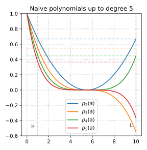
Полиномы Чебышёва оказываются оптимальным ответом на вопрос, который мы задавали. Соответствующим образом масштабированные, они минимизируют абсолютное значение в желаемом интервале [\mu,L] при условии, что значение равно 1 в начале.
\begin{aligned} T_0(x) &= 1\\ T_1(x) &= x\\ T_k(x) &=2xT_{k-1}(x)-T_{k-2}(x),\qquad k\ge 2.\\ \end{aligned}
Давайте построим стандартные полиномы Чебышёва (без масштабирования):
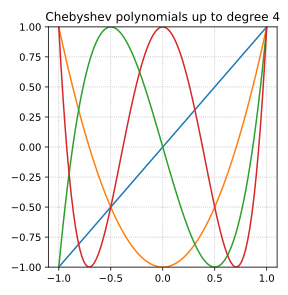
Исходные полиномы Чебышёва определяются на интервале [-1,1]. Чтобы использовать их для наших целей, нам нужно их масштабировать на интервал [\mu,L].
Мы будем использовать следующую аффинную трансформацию: x = \frac{L + \mu - 2a}{L - \mu}, \quad a \in [\mu,L], \quad x \in [-1,1].
Обратите внимание, что x=1 соответствует a=\mu, x=-1 соответствует a=L и x=0 соответствует a=\frac{\mu+L}{2}. Эта трансформация гарантирует, что поведение полинома Чебышёва на интервале [-1,1] отражается в интервал [\mu, L]
В нашем анализе ошибок мы требуем, чтобы полином был равен 1 в 0 (т.е., p_k(0)=1). После применения трансформации значение T_k в точке, соответствующей a=0, может не быть 1. Таким образом, мы нормируем полином T_k, деля его на значение T_k\left(\frac{L+\mu}{L-\mu}\right): \frac{L+\mu}{L-\mu}, \qquad \text{гарантируя, что} \qquad P_k(0)= T_k\left(\frac{L+\mu-0}{L-\mu}\right) \cdot T_k\left(\frac{L+\mu}{L-\mu}\right)^{-1} = 1.
Давайте построим масштабированные полиномы Чебышёва P_k(a) = T_k\left(\frac{L+\mu-2a}{L-\mu}\right) \cdot T_k\left(\frac{L+\mu}{L-\mu}\right)^{-1} и наблюдаем, что они значительно лучше ведут себя в интервале [\mu,L] по сравнению с наивными полиномами.
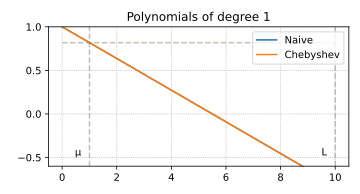 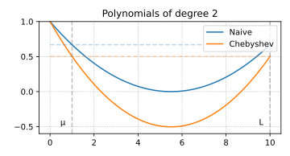 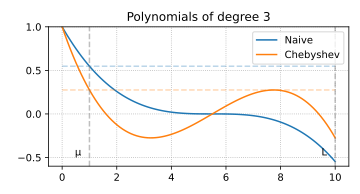 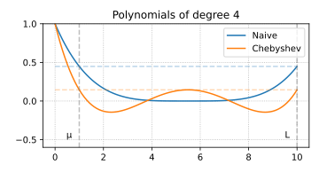 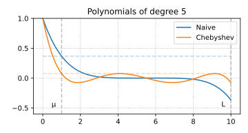 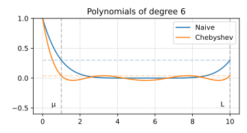
Мы видим, что максимальное значение полинома Чебышёва на интервале [\mu,L] достигается в точке a=\mu. Следовательно, мы можем использовать следующую верхнюю границу: \|P_k(A)\|_2 \le P_k(\mu) = T_k\left(\frac{L+\mu-2\mu}{L-\mu}\right) \cdot T_k\left(\frac{L+\mu}{L-\mu}\right)^{-1} = T_k\left(1\right) \cdot T_k\left(\frac{L+\mu}{L-\mu}\right)^{-1} = T_k\left(\frac{L+\mu}{L-\mu}\right)^{-1}
Используя определение числа обусловленности \varkappa = \frac{L}{\mu}, мы получаем: \|P_k(A)\|_2 \le T_k\left(\frac{\varkappa+1}{\varkappa-1}\right)^{-1} = T_k\left(1 + \frac{2}{\varkappa-1}\right)^{-1} = T_k\left(1 + \epsilon\right)^{-1}, \quad \epsilon = \frac{2}{\varkappa-1}.
Следовательно, нам нужно только понять значение T_k в 1+\epsilon. Это то, откуда берется ускорение. Мы будем ограничивать это значение сверху величиной \mathcal{O}\left(\frac{1}{\sqrt{\epsilon}}\right).
Чтобы ограничить |P_k| сверху, нам нужно оценить |T_k(1 + \epsilon)| снизу.
Для любого x\ge 1, полином Чебышёва первого рода может быть записан как \begin{aligned} T_k(x)&=\cosh\left(k\,\mathrm{arccosh}(x)\right)\\ T_k(1+\epsilon)&=\cosh\left(k\,\mathrm{arccosh}(1+\epsilon)\right). \end{aligned}
Для любого x\ge 1, полином Чебышёва первого рода может быть записан как \begin{aligned} T_k(x)&=\cosh\left(k\,\mathrm{arccosh}(x)\right)\\ T_k(1+\epsilon)&=\cosh\left(k\,\mathrm{arccosh}(1+\epsilon)\right). \end{aligned}
Помним, что: \cosh(x)=\frac{e^x+e^{-x}}{2} \quad \mathrm{arccosh}(x) = \ln(x + \sqrt{x^2-1}).
Пусть \phi=\mathrm{arccosh}(1+\epsilon), e^{\phi}=1+\epsilon + \sqrt{2\epsilon+\epsilon^2} \geq 1+\sqrt{\epsilon}.
Следовательно, \begin{aligned} T_k(1+\epsilon)&=\cosh\left(k\,\mathrm{arccosh}(1+\epsilon)\right) \\ &= \cosh\left(k\phi\right) \\ &= \frac{e^{k\phi} + e^{-k\phi}}{2} \geq\frac{e^{k\phi}}{2} \\ &= \frac{\left(1+\sqrt{\epsilon}\right)^k}{2}. \end{aligned}
Наконец, мы получаем: \begin{aligned} \|e_k\| &\leq \|P_k(A)\| \|e_0\| \leq \frac{2}{\left(1 + \sqrt{\epsilon}\right)^k} \|e_0\| \\ &\leq 2 \left(1 + \sqrt{\frac{2}{\varkappa-1}}\right)^{-k} \|e_0\| \\ &\leq 2 \exp\left( - \sqrt{\frac{2}{\varkappa-1}} k\right) \|e_0\| \end{aligned}
Из-за рекурсивного определения полиномов Чебышёва, мы непосредственно получаем итерационную схему ускорения. Переформулируя рекуррентное соотношение в терминах наших масштабированных полиномов Чебышёва, мы получаем: T_{k+1}(x) =2xT_{k}(x)-T_{k-1}(x) Поскольку x = \frac{L+\mu-2a}{L-\mu}, и: \begin{aligned} P_k(a) &= T_k\left(\frac{L+\mu-2a}{L-\mu}\right) T_k\left(\frac{L+\mu}{L-\mu}\right)^{-1}\\ T_k\left(\frac{L+\mu-2a}{L-\mu}\right) &= P_k(a) T_k\left(\frac{L+\mu}{L-\mu}\right) \end{aligned} \begin{aligned} T_{k-1}\left(\frac{L+\mu-2a}{L-\mu}\right) &= P_{k-1}(a) T_{k-1}\left(\frac{L+\mu}{L-\mu}\right) \\ T_{k+1}\left(\frac{L+\mu-2a}{L-\mu}\right) &= P_{k+1}(a) T_{k+1}\left(\frac{L+\mu}{L-\mu}\right) \end{aligned} \begin{aligned} P_{k+1}(a) t_{k+1} &= 2 \frac{L+\mu-2a}{L-\mu} P_{k}(a) t_{k} - P_{k-1}(a) t_{k-1} \text{, where } t_{k} = T_{k}\left(\frac{L+\mu}{L-\mu}\right) \\ P_{k+1}(a) &= 2 \frac{L+\mu-2a}{L-\mu} P_{k}(a) \frac{t_{k}}{t_{k+1}} - P_{k-1}(a) \frac{t_{k-1}}{t_{k+1}} \end{aligned}
Поскольку мы имеем P_{k+1}(0) = P_{k}(0) = P_{k-1}(0) = 1, мы можем записать метод в следующей форме: P_{k+1}(a) = (1 - \alpha_k a) P_k(a) + \beta_k \left(P_{k}(a) - P_{k-1}(a) \right).
Перегруппируя члены, мы получаем: \begin{aligned} P_{k+1}(a) &= (1 + \beta_k) P_k(a) - \alpha_k a P_k(a) - \beta_k P_{k-1}(a),\\ P_{k+1}(a) &= 2 \frac{L+\mu}{L-\mu} \frac{t_{k}}{t_{k+1}} P_{k}(a) - \frac{4a}{L-\mu} \frac{t_{k}}{t_{k+1}}P_{k}(a) - \frac{t_{k-1}}{t_{k+1}} P_{k-1}(a) \end{aligned} \begin{cases} \beta_k = \dfrac{t_{k-1}}{t_{k+1}}, \\[6pt] \alpha_k = \dfrac{4}{L-\mu} \dfrac{t_k}{t_{k+1}}, \\[6pt] 1 + \beta_k = 2 \dfrac{L + \mu}{L - \mu} \dfrac{t_k}{t_{k+1}} \end{cases}
Мы почти закончили . Помним, что e_{k+1} = P_{k+1}(A) e_0. Также отметим, что мы работаем с квадратичной задачей, поэтому мы можем предположить x^* = 0 без потери общности. В этом случае e_0 = x_0 и e_{k+1} = x_{k+1}. \begin{aligned} x_{k+1} &= P_{k+1}(A) x_0 = (I - \alpha_k A) P_k(A) x_0 + \beta_k \left(P_{k}(A) - P_{k-1}(A) \right) x_0 \\ &= (I - \alpha_k A) x_k + \beta_k \left(x_k - x_{k-1}\right) \end{aligned}
Для квадратичной задачи мы имеем \nabla f(x_k) = A x_k, поэтому мы можем переписать обновление как: \boxed{ x_{k+1} = x_k - \alpha_k \nabla f(x_k) + \beta_k \left(x_k - x_{k-1}\right) }
Теорема о сходимости метода тяжелого шарика для сильно выпуклой квадратичной задачи.
Рассматривается задача f(x) \rightarrow \min_{x \in \mathbb{R}^d} f(x) = \frac{1}{2}x^TAx - b^Tx + c, \quad A \in \mathbb{S}_{++} \Rightarrow \nabla f(x) = Ax - b \overset{\nabla f(x^*) = 0}{\Rightarrow} Ax^* = b. Не умаляя общности, c = 0, так как решение от него не зависит.
Метод тяжелого шарика имеет вид: x_{k+1} = x_k - \alpha \nabla f(x_k) + \beta (x_k - x_{k-1}) Тогда скорость сходимости (\rho) не зависит от шага (при допустимых его значениях), \rho \sim \sqrt{\beta^*}, где \beta^* - оптимальный гиперпараметр и выполняется \|x_k-x^*\|\leqslant\left(\dfrac{\sqrt{\kappa}-1}{\sqrt{\kappa}+1}\right)^k\|x_0 - x^*\|.
Для произвольной сильно выпуклой квадратичной функции мы можем ввести такие новые координаты, чтобы матрица квадратичной функции стала диагональной. Для этого обратимся к спектральному разложению матрицы A = Q \Lambda Q^T. Пусть \hat{x} = Q^T(x - x^*), где x^* - точка минимума исходной функции, определяемая как Ax^* = b. При этом x = Q\hat{x} + x^*. \begin{split} f(\hat{x}) &= \frac12 (Q\hat{x} + x^*)^\top A (Q\hat{x} + x^*) - b^\top (Q\hat{x} + x^*) \\ &= \frac12 \hat{x}^T Q^TAQ\hat{x} + \frac12 (x^*)^T A (x^*) + (x^*)^TAQ\hat{x} - b^T Q\hat{x} - b^T x^*\\ &= \frac12 \hat{x}^T \Lambda \hat{x} + \frac12 (x^*)^T A (x^*) + (x^*)^TAQ\hat{x} - (x^*)^T A^TQ\hat{x} - (x^*)^T A x^*\\ &= \frac12 \hat{x}^T \Lambda \hat{x} \underbrace{- \frac12 (x^*)^T A x^*}_{f(x^*)} \simeq \frac12 \hat{x}^T \Lambda \hat{x} \end{split} В последнем переходе мы отбросили константное слагаемое, которое в точности равно f(x^*). Оно нужно для того, чтобы значения функции в новых координатах были равны значениям функции в исходных координатах, но влияния на метод оно не оказывает.
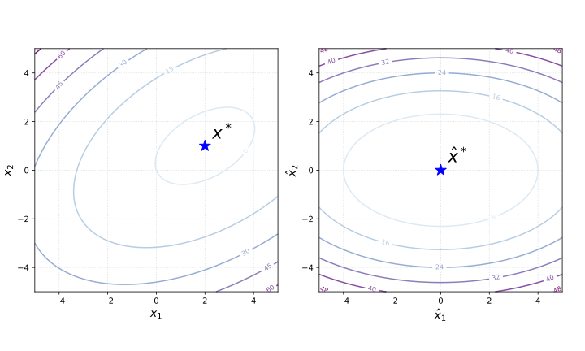
Рассмотрим метод тяжелого шарика: x^{k+1} = x^k - \alpha \nabla f(x^k) + \beta (x^k - x^{k-1}). В нашем случае (квадратичной задачи) в новых переменных этот метод имеет вид: \hat{x}_{k+1} = \hat{x}_k - \alpha \Lambda \hat{x}_k + \beta (\hat{x}_k - \hat{x}_{k-1}) = (I - \alpha \Lambda + \beta I) \hat{x}_k - \beta \hat{x}_{k-1} Это можно переписать как: \begin{split} &\hat{x}_{k+1} = (I - \alpha \Lambda + \beta I) \hat{x}_k - \beta \hat{x}_{k-1}, \\ &\hat{x}_{k} = \hat{x}_k. \end{split} Рассмотрим следующие обозначения: \hat{z}_k = \begin{bmatrix} \hat{x}_{k+1} \\ \hat{x}_{k} \end{bmatrix} Тогда \hat{z}_{k+1} = M \hat{z}_k, где матрица M имеет вид: M = \begin{bmatrix} I - \alpha \Lambda + \beta I & - \beta I \\ I & 0_{d} \end{bmatrix}. Заметим, что M является матрицей размера 2d \times 2d с 4 блочно-диагональными матрицами размера d \times d внутри. Это означает, что мы можем переупорядочить координаты, чтобы сделать M блочно-диагональной в следующем виде. Заметим, что в уравнении ниже матрица M обозначает то же самое, что и в обозначениях выше, за исключением описанной перестановки строк и столбцов. Мы используем эту небольшую неточность обозначений для ясности. 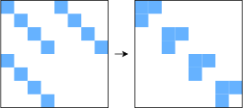 \begin{aligned} \begin{bmatrix} \hat{x}_{k}^{(1)} \\ \vdots \\ \hat{x}_{k}^{(d)} \\ \addlinespace \hat{x}_{k-1}^{(1)} \\ \vdots \\ \hat{x}_{k-1}^{(d)} \end{bmatrix} \to \begin{bmatrix} \hat{x}_{k}^{(1)} \\ \addlinespace \hat{x}_{k-1}^{(1)} \\ \vdots \\ \hat{x}_{k}^{(d)} \\ \addlinespace \hat{x}_{k-1}^{(d)} \end{bmatrix} \quad M = \begin{bmatrix} M_1\\ &M_2\\ &&\ldots\\ &&&M_d \end{bmatrix} \end{aligned} где \hat{x}_{k}^{(i)} является i-й координатой вектора \hat{x}_{k} \in \mathbb{R}^d, а M_i обозначает 2 \times 2 матрицу. Эта перестановка позволяет нам изучать динамику метода независимо для каждой координаты. Можно заметить, что асимптотическая скорость сходимости 2d-мерной последовательности векторов \hat{z}_k определяется наихудшей скоростью сходимости среди его блоков координат. Таким образом, достаточно изучать оптимизацию в одномерном случае.
Для i-й координаты с \lambda_i как i-м собственным значением матрицы M_i = \begin{bmatrix} 1 - \alpha \lambda_i + \beta & -\beta \\ 1 & 0 \end{bmatrix}. Метод будет сходиться, если \rho(M) < 1, а оптимальнасть параметров обеспечивается минимизацией спектрального радиуса \alpha^*, \beta^* = \arg \min_{\alpha, \beta} \max_{i} \rho(M_i) Покажем, что оптимальные значения гиперпараметров равны: \alpha^* = \dfrac{4}{(\sqrt{L} + \sqrt{\mu})^2} \qquad \beta^* = \left(\dfrac{\sqrt{L} - \sqrt{\mu}}{\sqrt{L} + \sqrt{\mu}}\right)^2. Можно показать, что для таких параметров матрица M имеет комплексно-сопряженную пару собственных значений, поэтому расстояние до оптимума (в этом случае, \Vert z_k \Vert) в общем случае не будет монотонно уменьшаться.
Можно явно вычислить собственные значения M_i: \lambda^{M_i}_1, \lambda^{M_i}_2 = \lambda \left( \begin{bmatrix} 1 - \alpha \lambda_i + \beta & -\beta \\ 1 & 0 \end{bmatrix}\right) = \dfrac{1+\beta - \alpha \lambda_i \pm \sqrt{(1+\beta - \alpha\lambda_i)^2 - 4\beta}}{2}. Когда \alpha и \beta оптимальны (\alpha^*, \beta^*), собственные значения являются комплексно-сопряженной парой (1+\beta - \alpha\lambda_i)^2 - 4\beta \leq 0, т.е. \beta \geq (1 - \sqrt{\alpha \lambda_i})^2. \text{Re}(\lambda^M) = \dfrac{L + \mu - 2\lambda_i}{(\sqrt{L} + \sqrt{\mu})^2}; \quad \text{Im}(\lambda^M) = \dfrac{\pm 2\sqrt{(L - \lambda_i)(\lambda_i - \mu)}}{(\sqrt{L} + \sqrt{\mu})^2}; \quad \vert \lambda^M \vert = \dfrac{L - \mu}{(\sqrt{L} + \sqrt{\mu})^2}. Скорость сходимости не зависит от шага и равна \sqrt{\beta^*}.
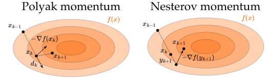
Доказательство сходимости метода сопряженных градиентов и вывод формул метода (В этом вопросе необходимо доказать за какое количество шагов сходится метод, как выбираются направления и почему в A-ортогонализации достаточно хранить лишь предыдущий шаг метода, а не все предыдущие).
\begin{aligned} & \mathbf{r}_0 := \mathbf{b} - \mathbf{A x}_0 \\ & \hbox{Если } \mathbf{r}_{0} \text{ достаточно мала, то вернуть } \mathbf{x}_{0} \text{ как результат}\\ & \mathbf{d}_0 := \mathbf{r}_0 \\ & k := 0 \\ & \text{повторить} \\ & \qquad \alpha_k := \frac{\mathbf{r}_k^\mathsf{T} \mathbf{r}_k}{\mathbf{d}_k^\mathsf{T} \mathbf{A d}_k} \\ & \qquad \mathbf{x}_{k+1} := \mathbf{x}_k + \alpha_k \mathbf{d}_k \\ & \qquad \mathbf{r}_{k+1} := \mathbf{r}_k - \alpha_k \mathbf{A d}_k \\ & \qquad \hbox{Если } \mathbf{r}_{k+1} \text{ достаточно мала, то выйти из цикла} \\ & \qquad \beta_k := \frac{\mathbf{r}_{k+1}^\mathsf{T} \mathbf{r}_{k+1}}{\mathbf{r}_k^\mathsf{T} \mathbf{r}_k} \\ & \qquad \mathbf{d}_{k+1} := \mathbf{r}_{k+1} + \beta_k \mathbf{d}_k \\ & \qquad k := k + 1 \\ & \text{конец повторения} \\ & \text{вернуть } \mathbf{x}_{k+1} \text{ как результат} \end{aligned}
Рассмотрим следующую квадратичную задачу оптимизации: \min\limits_{x \in \mathbb{R}^n} f(x) = \min\limits_{x \in \mathbb{R}^n} \dfrac{1}{2} x^\top A x - b^\top x + c, \text{ где }A \in \mathbb{S}^n_{++}. \tag{5}
Берём в арсенал процесс Грам-Шмидта: d_k = u_k + \sum\limits_{i=0}^{k-1}\beta_{ik} d_i \qquad \beta_{ik} = - \dfrac{\langle d_i, u_k \rangle}{\langle d_i, d_i \rangle} \tag{6}
Лемма 1. Линейная независимость A-ортогональных векторов.
Если множество векторов d_1, \ldots, d_n - попарно A-ортогональны (каждая пара векторов A-ортогональна), то эти векторы линейно независимы. A \in \mathbb{S}^n_{++}.
Доказательство
Покажем, что если \sum\limits_{i=1}^n\alpha_i d_i = 0, то все коэффициенты должны быть равны нулю: \begin{aligned} 0 &= \sum\limits_{i=1}^n\alpha_i d_i \\ \text{Умножаем на } d_j^T A \cdot \qquad &= d_j^\top A \left( \sum\limits_{i=1}^n\alpha_i d_i \right) = \sum\limits_{i=1}^n \alpha_i d_j^\top A d_i \\ &= \alpha_j d_j^\top A d_j + 0 + \ldots + 0 \end{aligned} Таким образом, \alpha_j = 0, для всех остальных индексов нужно проделать тот же процесс
Введем следующие обозначения:
- r_k = b - Ax_k - невязка
- e_k = x_k - x^* - ошибка
- Поскольку Ax^* = b, имеем r_k = b - Ax_k = Ax^* - Ax_k = -A (x_k - x^*) r_k = -Ae_k. \tag{7}
- Также заметим, что поскольку x_{k+1} = x_0 + \sum\limits_{i=1}^k\alpha_i d_i, имеем e_{k+1} = e_0 + \sum\limits_{i=1}^k\alpha_i d_i. \tag{8}
Лемма 2. Сходимость метода сопряженных направлений.
Предположим, мы решаем n-мерную квадратичную сильно выпуклую задачу оптимизации (5). Метод сопряженных направлений x_{k+1} = x_0 + \sum\limits_{i=0}^k\alpha_i d_i с \alpha_i = \frac{\langle d_i, r_i \rangle}{\langle d_i, Ad_i \rangle} взятым из точного линейного поиска, сходится за не более n шагов алгоритма.
Доказательство
- Нужно доказать, что \delta_i = - \alpha_i: e_0 = x_0 - x^* = \sum\limits_{i=0}^{n-1}\delta_i d_i
- Умножаем обе части слева на d_k^T A: \begin{aligned} d_k^T Ae_0 &= \sum\limits_{i=0}^{n-1}\delta_i d_k^T A d_i = \delta_k d_k^T A d_k \\ d_k^T A\left(e_0 + \sum\limits_{i=0}^{k-1}\alpha_i d_i \right) = d_k^T A e_k &= \delta_k d_k^T A d_k \quad \left(A-\text{ ортогональность}\right)\\ \delta_k = \frac{ d_k^T A e_k}{d_k^T A d_k } &= -\frac{ d_k^T r_k}{d_k^T A d_k } \Leftrightarrow \delta_k = - \alpha_k \end{aligned}
Лемма 3. Разложение ошибки.
e_i = \sum\limits_{j=i}^{n-1}-\alpha_j d_j \tag{9}
Доказательство
По определению e_{i} = e_0 + \sum\limits_{j=0}^{i-1}\alpha_j d_j = x_0 - x^* + \sum\limits_{j=0}^{i-1}\alpha_j d_j = -\sum\limits_{j=0}^{n-1}\alpha_j d_j + \sum\limits_{j=0}^{i-1}\alpha_j d_j = \sum\limits_{j=i}^{n-1}-\alpha_j d_j
Лемма 4. Невязка ортогональна всем предыдущим направлениям для CD.
Рассмотрим невязку метода сопряженных направлений на k итерации r_k, тогда для любого i < k: d_i^T r_k = 0 \tag{10}
Доказательство
Запишем (9) для некоторого фиксированного индекса k: e_k = \sum\limits_{j=k}^{n-1}-\alpha_j d_j Умножаем обе части на -d_i^TA \cdot -d_i^TA e_k = \sum\limits_{j=k}^{n-1}\alpha_j d_i^TA d_j = 0
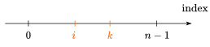
Таким образом, d_i^T r_k = 0 и невязка r_k ортогональна всем предыдущим направлениям d_i для метода CD.
Идея метода сопряженных градиентов (CG)
- Это буквально метод сопряженных направлений, в котором мы выбираем специальный набор d_0, \ldots, d_{n-1}, позволяющий значительно ускорить процесс Грама-Шмидта.
- Используется процесс Грама-Шмидта с A-ортогональностью вместо Евклидовой ортогональности, чтобы получить их из набора начальных векторов.
- На каждой итерации r_0, \ldots, r_{n-1} используются в качестве начальных векторов для процесса Грама-Шмидта.
- Основная идея заключается в том, что для произвольного метода CD процесс Грама-Шмидта вычислительно дорогой и требует квадратичного числа операций сложения векторов и скалярных произведений \mathcal{O}\left( n^2\right), в то время как в случае CG мы покажем, что сложность этой процедуры может быть уменьшена до линейной \mathcal{O}\left( n\right).
\text{CG} = \text{CD} + r_0, \ldots, r_{n-1} \text{ как начальные векторы для процесса Грама-Шмидта} + A\text{-ортогональность.}
Лемма 5. Невязки ортогональны друг другу в методе CG
Все невязки в методе CG ортогональны друг другу: r_i^T r_k = 0 \qquad \forall i \neq k \tag{11}
Доказательство
Запишем процесс Грама-Шмидта (6) с \langle \cdot, \cdot \rangle замененным на \langle \cdot, \cdot \rangle_A = x^T A y d_i = u_i + \sum\limits_{j=0}^{i-1}\beta_{ji} d_j \;\; \beta_{ji} = - \dfrac{\langle d_j, u_i \rangle_A}{\langle d_j, d_j \rangle_A} \tag{12}
Тогда, мы используем невязки в качестве начальных векторов для процесса и u_i = r_i.
d_i = r_i + \sum\limits_{j=0}^{i-1}\beta_{ji} d_j \;\; \beta_{ji} = - \dfrac{\langle d_j, r_i \rangle_A}{\langle d_j, d_j \rangle_A} \tag{13}
Умножаем обе части (12) на r_k^T \cdot для некоторого индекса k: r_k^Td_i = r_k^Tu_i + \sum\limits_{j=0}^{i-1}\beta_{ji} r_k^Td_j
Если j < i < k, то имеем лемму 4 с d_i^T r_k = 0 и d_j^T r_k = 0. Имеем: r_k^Tu_i= 0 \;\text{ для CD} \;\; r_k^Tr_i = 0 \;\text{ для CG} Более того, если k=i: r_k^Td_k = r_k^Tu_k + \sum\limits_{j=0}^{k-1}\beta_{jk} r_k^Td_j = r_k^Tu_k + 0, и мы имеем для любого k (из-за произвольного выбора i): r_k^Td_k = r_k^Tu_k. \tag{14}
Лемма 6. Пересчет невязки r_{k+1} = r_k - \alpha_k A d_k \tag{15} r_{k+1} = -A e_{k+1} = -A \left( e_{k} + \alpha_k d_k \right) = -A e_{k} - \alpha_k A d_k = r_k - \alpha_k A d_k Наконец, все эти вышеуказанные леммы достаточны для доказательства, что \beta_{ji} = 0 для всех i,j, кроме соседних.
Грам-Шмидт в методе CG
Рассмотрим процесс Грам-Шмидта в методе CG: \beta_{ji} = - \dfrac{\langle d_j, u_i \rangle_A}{\langle d_j, d_j \rangle_A} = - \dfrac{ d_j^T A u_i }{ d_j^T A d_j } = - \dfrac{ d_j^T A r_i }{ d_j^T A d_j } = - \dfrac{r_i^T A d_j}{ d_j^T A d_j }. Рассмотрим скалярное произведение \langle r_i, r_{j+1} \rangle используя (15): \begin{aligned} \langle r_i, r_{j+1} \rangle &= \langle r_i, r_j - \alpha_j A d_j \rangle = \langle r_i, r_j \rangle - \alpha_j\langle r_i, A d_j \rangle \\ \alpha_j\langle r_i, A d_j \rangle &= \langle r_i, r_j \rangle - \langle r_i, r_{j+1} \rangle \end{aligned}
- Если i=j: \alpha_i\langle r_i, A d_i \rangle = \langle r_i, r_i \rangle - \langle r_i, r_{i+1} \rangle = \langle r_i, r_i \rangle. Этот случай не интересен по построению процесса Грам-Шмидта.
- Соседний случай i=j + 1: \alpha_j\langle r_i, A d_j \rangle = \langle r_i, r_{i-1} \rangle - \langle r_i, r_{i} \rangle = - \langle r_i, r_i \rangle
- Для любого другого случая: \alpha_j\langle r_i, A d_j \rangle = 0, потому что все невязки ортогональны друг другу.
Наконец, мы имеем формулу для i=j + 1: \beta_{ji} = - \dfrac{r_i^T A d_j}{ d_j^T A d_j} = \dfrac{1}{\alpha_j}\dfrac{\langle r_i, r_i \rangle}{ d_j^T A d_j} = \dfrac{d_j^T A d_j}{d_j^T r_j}\dfrac{\langle r_i, r_i \rangle}{ d_j^T A d_j} = \dfrac{\langle r_i, r_i \rangle}{\langle r_j, r_j \rangle} = \dfrac{\langle r_i, r_i \rangle}{\langle r_{i-1}, r_{i-1} \rangle}
И для направления d_{k+1} = r_{k+1} + \beta_{k,k+1} d_k, \qquad \beta_{k,k+1} = \beta_k = \dfrac{\langle r_{k+1}, r_{k+1} \rangle}{\langle r_{k}, r_{k} \rangle}.
Теорема сходимости метода Ньютона для сильно выпуклых функций с Липшицевым гессианом.
Пусть f(x) — сильно выпуклая дважды непрерывно дифференцируемая функция на \mathbb{R}^n, для второй производной которой выполняются неравенства: \mu I_n\preceq \nabla^2 f(x) \preceq L I_n. Пусть также гессиан функции M-липшицев. Тогда метод Ньютона сходится локально к решению с квадратичной скоростью, т.е. при \| x_0 - x^* \| < \frac{2 \mu}{3M}: \|x_{k+1} - x^*\| \leq \frac{3 M}{2\mu} \|x_k - x^*\|^2
Доказательство
Мы будем использовать формулу Ньютона-Лейбница \nabla f(x_{k}) - \nabla f(x^*) = \int_0^1 \nabla^2 f(x^* + \tau (x_k - x^*)) (x_k - x^*) d\tau
Мы будем отслеживать расстояние до решения \begin{aligned} x_{k+1} - x^* = x_k -\left[ \nabla^2 f(x_k)\right]^{-1} \nabla f(x_{k}) - x^* = x_k - x^* -\left[ \nabla^2 f(x_k)\right]^{-1} \nabla f(x_{k}) = \\ = x_k - x^* - \left[ \nabla^2 f(x_k)\right]^{-1} \int_0^1 \nabla^2 f(x^* + \tau (x_k - x^*)) (x_k - x^*) d\tau \end{aligned}
\begin{aligned} = \left( I - \left[ \nabla^2 f(x_k)\right]^{-1} \int_0^1 \nabla^2 f(x^* + \tau (x_k - x^*)) d \tau\right) (x_k - x^*)= \\ = \left[ \nabla^2 f(x_k)\right]^{-1} \left( \nabla^2 f(x_k) - \int_0^1 \nabla^2 f(x^* + \tau (x_k - x^*)) d \tau\right) (x_k - x^*) = \\ = \left[ \nabla^2 f(x_k)\right]^{-1} \left( \int_0^1 \left( \nabla^2 f(x_k) - \nabla^2 f(x^* + \tau (x_k - x^*)) d \tau\right)\right) (x_k - x^*)= \\ = \left[ \nabla^2 f(x_k)\right]^{-1} G_k (x_k - x^*) \end{aligned}
Введём: G_k = \int_0^1 \left( \nabla^2 f(x_k) - \nabla^2 f(x^* + \tau (x_k - x^*)) d \tau\right).
Попробуем оценить размер G_k с помощью r_k = \| x_k - x^* \|: \begin{aligned} \| G_k\| = \left\| \int_0^1 \left( \nabla^2 f(x_k) - \nabla^2 f(x^* + \tau (x_k - x^*)) d \tau\right)\right\| \leq \\ \leq \int_0^1 \left\| \nabla^2 f(x_k) - \nabla^2 f(x^* + \tau (x_k - x^*)) \right\|d\tau \leq \qquad \text{(Липшицевость гессиана)}\\ \leq \int_0^1 M\|x_k - x^* - \tau (x_k - x^*)\| d \tau = \int_0^1 M\|x_k - x^*\|(1- \tau)d \tau = \frac{r_k}{2}M, \end{aligned}
Получаем: r_{k+1} \leq \left\|\left[ \nabla^2 f(x_k)\right]^{-1}\right\| \cdot \frac{r_k}{2}M \cdot r_k и нам нужно оценить норму обратного гессиана
Из липшицевости и симметричности гессиана: \begin{aligned} \nabla^2 f(x_k) - \nabla^2 f(x^*) \succeq - Mr_k I_n \\ \nabla^2 f(x_k) \succeq \nabla^2 f(x^*) - Mr_k I_n \\ \nabla^2 f(x_k) \succeq \mu I_n - Mr_k I_n \\ \nabla^2 f(x_k) \succeq (\mu- Mr_k )I_n \\ \end{aligned}
Из сильной выпуклости следует, что \nabla^2 f(x_k) \succ 0, i.e. r_k < \frac{\mu}{M}. \begin{aligned} \left\|\left[ \nabla^2 f(x_k)\right]^{-1}\right\| \leq (\mu - Mr_k)^{-1} \\ r_{k+1} \leq \dfrac{r_k^2 M}{2(\mu - Mr_k)} \end{aligned}
Потребуем, чтобы верхняя оценка на r_{k+1} была меньше r_k, учитывая, что 0 <r_k < \frac{\mu}{M}: \begin{aligned} \dfrac{r_k^2 M}{2(\mu - Mr_k)} &< r_k \\ \frac{M}{2(\mu - Mr_k)}\, r_k &< 1 \\ M r_k &< 2(\mu - Mr_k) \\ 3 M r_k &< 2\mu \\ r_k &< \frac{2\mu}{3M} \end{aligned}
Возвращаясь к оценке невязки на k+1-ой итерации, получаем: r_{k+1} \leq \dfrac{r_k^2 M}{2(\mu - Mr_k)} < \dfrac{3 M r_k^2 }{2\mu}
Таким образом, мы получили важный результат: метод Ньютона для функции с липшицевым положительно определённым гессианом сходится квадратично вблизи решения.
Вывод формул обновления оценок обратного гессиана и гессиана квазиньютоновских методов SR-1, DFP, BFGS.
x_{k+1} = x_k + \alpha_k d_k, \quad B_k d_k = -\nabla f(x_k) B_k = \nabla^2 f(x_k)
То есть на каждой итерации необходимо вычислять гессиан и решать систему линейных уравнений.
В квази-ньютоновских методах мы рассматриваем последовательность матриц B_k, сходящихся в каком-то смысле к настоящему значению обратного Гессиана в локальном оптимуме: \left[\nabla^2 f(x^*)\right]^{-1}.
Общая схема:
- Решить B_{k} d_{k} = -\nabla f(x_{k})
- Обновить x_{k+1} = x_{k} + \alpha_k d_{k} (уравнения секущих)
- Вычислить B_{k+1} из B_{k}
Требования к B_{k+1} из ур-я секущих:
\begin{aligned} \nabla f(x_{k+1}) - \nabla f(x_{k}) &= B_{k+1} (x_{k+1} - x_k) = B_{k+1} d_{k} \\ \Delta y_k &= B_{k+1} d_k \end{aligned} Также требуем:
- B_{k+1} - симметрична
- B_{k+1} “близка” к B_k
- B_k \succ 0 \Rightarrow B_{k+1} \succ 0
Symmetric Rank-One (Broyden) Update
Поробуем такой вид обновления: B_{k+1} = B_k + a u u^T
уравнение секущих B_{k+1} d_k = \Delta y_k приводит к: (a u^T d_k) u = \Delta y_k - B_k d_k
Это справедливо только в том случае, если u кратно $ y_k - B_k d_k$. Полагая u = \Delta y_k - B_k d_k, мы решаем приведенную выше задачу,
a = \frac{1}{(\Delta y_k - B_k d_k)^T d_k},
Что приводит к: B_{k+1} = B_k + \frac{(\Delta y_k - B_k d_k)(\Delta y_k - B_k d_k)^T}{(\Delta y_k - B_k d_k)^T d_k}
Называется симметричный одноранговый апдейт (SR1) или метод Бройдена.
Davidon-Fletcher-Powell Update (DFP)
Как мы можем решить B_{k+1} d_{k+1} = -\nabla f(x_{k+1}), для того, чтобы сделать следующий шаг? В дополнение к приведению B_k к B_{k+1}, давайте будем приводить обратные, т.е, C_k = B_k^{-1} to C_{k+1} = (B_{k+1})^{-1}.
Sherman-Morrison Formula: Формула Шермана-Моррисона утверждает:
(A + uv^T)^{-1} = A^{-1} - \frac{A^{-1}uv^T A^{-1}}{1 + v^T A^{-1}u}
C_{k+1} = C_k + a u u^T + b v v^T.
Умножая на \Delta y_k и ипользуя уравнение секущих d_k = C_{k+1} \Delta y_k имеет:
d_k = C_k\Delta y_k + (a u^T \Delta y_k)u + (bv^T\Delta y_k)v
Полагая u = C_k\Delta y_k, v = d_k и решая для a, b получаем:
(1 + a \Delta y_k ^T C \Delta y_k) C_k \Delta y_k + (bd_k^T\Delta y_k - 1)d_k \Leftrightarrow a = -\frac{1}{\Delta y_k ^T C \Delta y_k}, b = \frac{1}{\Delta y_k^T d_k}
C_{k+1} = C_k - \frac{C_k \Delta y_k \Delta y_k^T C_k}{\Delta y_k^T C_k \Delta y_k} + \frac{d_k d_k^T}{\Delta y_k^T d_k}
Woodbury Formula Application Формула показывает:
B_{k+1} = \left(I - \frac{\Delta y_k d_k^T}{\Delta y_k^T d_k}\right)B_k\left(I - \frac{d_k \Delta y_k^T}{\Delta y_k^T d_k}\right) + \frac{\Delta y_k \Delta y_k^T}{\Delta y_k^T d_k}
Это обновление Davidon-Fletcher-Powell (DFP). Также дешево: \mathcal{O}(n^2), сохраняет положительную определенность. Не так популярно, как BFGS.
Broyden-Fletcher-Goldfarb-Shanno update
Давайте теперь попробуем обновление второго ранга: B_{k+1} = B_k + a u u^T + b v v^T.
Умножая на \Delta y_k и используя уравнение секущих \Delta y_k = B_{k+1} d_k имеем: \Delta y_k - B_k d_k = (a u^T d_k) u + (b v^T d_k) v
Полагая u = \Delta y_k, v = B_k d_k, и решая для a, b мы получаем: (1 - a \Delta y_k^T d_k)\Delta y_k - (1 + bd_k^TB_k d_k)B_kd_k \Leftrightarrow a = \frac{1}{y_k^T d_k}, b = -\frac{1}{d_k^TB_k d_k} B_{k+1} = B_k - \frac{B_k d_k d_k^T B_k}{d_k^T B_k d_k} + \frac{\Delta y_k \Delta y_k^T}{d_k^T \Delta y_k} называется обновлением Бройдена-Флетчера-Гольдфарба-Шанно (BFGS).
Теорема о сходимости метода проекции градиента для выпуклой гладкой функции.
Пусть f: \mathbb{R}^n \to \mathbb{R} выпуклая и дифференцируемая. Пусть S \subseteq \mathbb{R}^n замкнутое выпуклое множество, и пусть x^* - минимизатор f на S; кроме того, пусть f гладкая на S с параметром L. Метод проекции градиента с шагом \frac1L достигает следующей оценки после итерации k > 0: f(x_k) - f^* \leq \frac{L\|x_0 - x^*\|_2^2}{2k}
Докажем лемму о достаточном убывании, предполагая, что y_{k} = x_k - \frac1L\nabla f(x_k) и теорему косинусов 2x^Ty = \|x\|^2 + \|y\|^2 - \|x-y\|^2: \begin{aligned} &\text{Гладкость:} &f(x_{k+1})& \leq f(x_{k}) + \langle \nabla f(x_{k}), x_{k+1}-x_{k} \rangle +\frac{L}{2} \| x_{k+1}-x_{k}\|^2\\ &\text{Метод:} & &= f(x_{k})-L\langle y_{k} - x_k , x_{k+1}-x_{k} \rangle +\frac{L}{2} \| x_{k+1}-x_{k}\|^2\\ &\cos: & &= f(x_{k})-\frac{L}{2}\left( \|y_{k} - x_k\|^2 + \|x_{k+1}-x_{k}\|^2 - \|y_{k} - x_{k+1}\|^2\right) +\frac{L}{2} \| x_{k+1}-x_{k}\|^2\\ & & &= f(x_{k})-\frac{1}{2L}\|\nabla f(x_k)\|^2 + \frac{L}{2} \|y_{k} - x_{k+1}\|^2 \\ \end{aligned} \tag{16}
Снова используем теорему косинусов: \begin{aligned} \left\langle\frac1L \nabla f(x_k), x_k - x^* \right\rangle &= \frac12\left(\frac{1}{L^2}\|\nabla f(x_k)\|^2 + \|x_k - x^*\|^2 - \|x_k - x^* - \frac1L \nabla f(x_k)\|^2 \right) \\ \langle \nabla f(x_k), x_k - x^* \rangle &= \frac{L}{2}\left(\frac{1}{L^2}\|\nabla f(x_k)\|^2 + \|x_k - x^*\|^2 - \|y_k - x^*\|^2 \right) \\ \end{aligned}
Используем свойство проекции: \|x - \text{proj}_S(y)\|^2 + \|y - \text{proj}_S(y)\|^2 \leq \|x-y\|^2 с x = x^*, y = y_k: \begin{aligned} \|x^* - \text{proj}_S(y_k)\|^2 + \|y_k - \text{proj}_S(y_k)\|^2 \leq \|x^*-y_k\|^2 \\ \|y_k - x^*\|^2 \geq \|x^* - x_{k+1}\|^2 + \|y_k - x_{k+1}\|^2 \end{aligned}
Используя выпуклость и предыдущую часть: \begin{aligned} &\text{Выпуклость:} &f(x_k) - f^* &\leq \langle \nabla f(x_k), x_k - x^* \rangle \\ & & &\leq \frac{L}{2}\left(\frac{1}{L^2}\|\nabla f(x_k)\|^2 + \|x_k - x^*\|^2 - \|x_{k+1} - x^*\|^2 - \|y_k - x_{k+1}\|^2 \right) \end{aligned} Суммируем по i=0,k-1 \begin{aligned} \sum\limits_{i=0}^{k-1} \left[f(x_i) - f^*\right]&\leq\sum\limits_{i=0}^{k-1} \frac{1}{2L}\|\nabla f(x_i)\|^2 + \frac{L}{2}\|x_0 - x^*\|^2 - \frac{L}{2} \sum\limits_{i=0}^{i-1} \|y_i - x_{i+1}\|^2 \end{aligned}
Оценим градиенты с помощью неравенства о достаточном убывании (16): \begin{aligned} \sum\limits_{i=0}^{k-1} \left[f(x_i) - f^*\right]&\leq \sum\limits_{i=0}^{k-1}\left[ f(x_{i}) - f(x_{i+1}) + \frac{L}{2} \|y_{i} - x_{i+1}\|^2 \right] + \frac{L}{2}\|x_0 - x^*\|^2 - \frac{L}{2} \sum\limits_{i=0}^{i-1} \|y_i - x_{i+1}\|^2 \\ &\leq f(x_0) - f(x_k) + \frac{L}{2} \sum\limits_{i=0}^{i-1} \|y_i - x_{i+1}\|^2 + \frac{L}{2}\|x_0 - x^*\|^2 - \frac{L}{2} \sum\limits_{i=0}^{i-1} \|y_i - x_{i+1}\|^2 \\ &\leq f(x_0) - f(x_k) + \frac{L}{2}\|x_0 - x^*\|^2 \\ \sum\limits_{i=0}^{k-1} f(x_i) - k f^* &\leq f(x_0) - f(x \end{aligned}
Из неравенства о достаточном убывании: f(x_{k+1}) \le f(x_k) - \frac{1}{2L}\|\nabla f(x_k)\|^2 + \frac{L}{2}\|y_k - x_{k+1}\|^2,
Используем тот факт, что x_{k+1} = \mathrm{proj}_S(y_k). По определению проекции: \|y_k - x_{k+1}\| \le \|y_k - x_k\|,
Итак, y_k = x_k - \tfrac{1}{L}\nabla f(x_k) подразумевает, что \|y_k - x_k\| = \tfrac{1}{L}\|\nabla f(x_k)\|. Следовательно: \frac{L}{2}\,\|y_k - x_{k+1}\|^2 \le \frac{L}{2}\,\|y_k - x_k\|^2 = \frac{L}{2}\,\frac{1}{L^2}\,\|\nabla f(x_k)\|^2 = \frac{1}{2L}\,\|\nabla f(x_k)\|^2.
Подставляем обратно в (*): f(x_{k+1}) \le f(x_k) - \frac{1}{2L}\|\nabla f(x_k)\|^2 + \frac{1}{2L}\|\nabla f(x_k)\|^2 = f(x_k).
Следовательно: f(x_{k+1}) \le f(x_k)\quad\text{for each }k, Следовательно, \{f(x_k)\} является монотонно невозрастающей последовательностью.
Окончательная оценка сходимости: Из шага 5 мы уже установили: \sum_{i=0}^{k-1}\bigl[f(x_i) - f^*\bigr] \le \frac{L}{2}\|x_0 - x^*\|_2^2. Поскольку f(x_i) убывает в i, в частности f(x_k) \le f(x_i) для всех i \le k. Следовательно: k\,\bigl[f(x_k) - f^*\bigr] \le \sum_{i=0}^{k-1}\bigl[f(x_i) - f^*\bigr] \le \frac{L}{2}\|x_0 - x^*\|_2^2, Следовательно: f(x_k) - f^* \le \frac{L\|x_0 - x^*\|_2^2}{2k}.
Теорема о сходимости метода Франк-Вульфа для выпуклых гладких функций.
Пусть f: \mathbb{R}^n \to \mathbb{R} выпуклая и дифференцируемая. Пусть S \subseteq \mathbb{R}^n замкнутое выпуклое множество, и пусть x^* - минимизатор f на S; кроме того, пусть f гладкая на S с параметром L. Метод Франк-Вульфа с шагом \gamma_k = \frac{k-1}{k+1} достигает следующей оценки после итерации k > 0: f(x_k) - f^* \leq \frac{2LR^2}{k+1} где R = \max\limits_{x, y \in S} \|x - y\| - диаметр множества S.
Доказательство
Из гладкости f: \begin{aligned} f\left(x_{k+1}\right) - f\left(x_k\right) &\leq \left\langle \nabla f\left(x_k\right), x_{k+1} - x_k \right\rangle + \frac{L}{2} \left\|x_{k+1} - x_k\right\|^2 \\ &= (1 - \gamma_k) \left\langle \nabla f\left(x_k\right), y_k - x_k \right\rangle + \frac{L (1 - \gamma_k)^2}{2} \left\|y_k - x_k\right\|^2 \end{aligned}
Из выпуклости f, для любого x \in S, включая x^*: \langle \nabla f(x_k), x - x_k \rangle \leq f(x) - f(x_k) В частности, для x = x^*: \langle \nabla f(x_k), x^* - x_k \rangle \leq f(x^*) - f(x_k)
По определению y_k, мы имеем \langle \nabla f(x_k), y_k \rangle \leq \langle \nabla f(x_k), x^* \rangle, следовательно: \langle \nabla f(x_k), y_k - x_k \rangle \leq \langle \nabla f(x_k), x^* - x_k \rangle \leq f(x^*) - f(x_k)
Объединяя неравенства: \begin{aligned} f\left(x_{k+1}\right) - f\left(x_k\right) &\leq (1 - \gamma_k) \left\langle \nabla f\left(x_k\right), y_k - x_k \right\rangle + \frac{L (1 - \gamma_k)^2}{2} \left\|y_k - x_k\right\|^2 \\ &\leq (1 - \gamma_k) \left( f(x^*) - f(x_k) \right) + \frac{L (1 - \gamma_k)^2}{2} R^2 \end{aligned}
Перегруппируем: \begin{aligned} f\left(x_{k+1}\right) - f(x^*) &\leq \gamma_k \left( f(x_k) - f(x^*) \right) + (1 - \gamma_k)^2 \frac{L R^2}{2} \end{aligned}
Обозначив \delta_k = \frac{f\left(x_k\right) - f\left(x^*\right)}{L R^2}, мы получаем: \delta_{k+1} \leq \gamma_k \delta_k + \frac{(1 - \gamma_k)^2}{2} = \frac{k - 1}{k + 1} \delta_k + \frac{2}{(k + 1)^2}
Докажем, что \delta_k \leq \frac{2}{k+1} по индукции.
- База: \delta_2 \leq \frac{1}{2} < \frac23
- Предположим, что \delta_k \leq \frac{2}{k+1}
- Тогда \delta_{k+1} \leq \frac{k-1}{k+1} \cdot \frac{2}{k+1} + \frac{2}{(k+1)^2} = \frac{2k}{k^2 + 2k + 1} < \frac{2}{k+2}
Получаем желаемый результат: f(x_k) - f^* \leq \frac{2LR^2}{k+1}
Теорема о сходимости субградиентного метода для выпуклых Липшицевых функций. Стратегии выбора шага для сходимости. Как обеспечить сходимость с постоянным шагом, задаваемым заранее? Как обеспечить сходимость с убывающим шагом?
Пусть f выпуклая и G-липшицева. Пусть R = \|x_0 - x^*\|_2. Для постоянного шага \alpha = \frac{R}{G}\sqrt{\frac{1}{k}}, субградиентный метод удовлетворяет f_k^{\text{best}} - f(x^*) \leq \frac{G R}{\sqrt{k}}
\begin{split} \| x_{k+1} - x^* \|^2 & = \|x_k - x^* - \alpha_k g_k\|^2 = \\ & = \| x_k - x^* \|^2 + \alpha_k^2 \|g_k\|^2 - 2 \alpha_k \langle g_k, x_k - x^* \rangle \\ &\leq \| x_k - x^* \|^2 + \alpha_k^2 \|g_k\|^2 - 2 \alpha_k (f(x_k) - f(x^*)) \\ 2 \alpha_k (f(x_k) - f(x^*)) &\leq \| x_k - x^* \|^2 - \| x_{k+1} - x^* \|^2 + \alpha_k^2 \|g_k\|^2 \end{split}
Суммируем полученное неравенство для k = 0, \ldots, T-1: \begin{split} \sum\limits_{k = 0}^{T-1}2\alpha_k (f(x_k) - f(x^*)) &\leq \| x_0 - x^* \|^2 - \| x_{T} - x^* \|^2 + \sum\limits_{k=0}^{T-1}\alpha_k^2 \|g_k\|^2 \\ &\leq \| x_0 - x^* \|^2 + \sum\limits_{k=0}^{T-1}\alpha_k^2 \|g_k\|^2 \\ &\leq R^2 + G^2\sum\limits_{k=0}^{T-1}\alpha_k^2 \end{split}
- Запишем, насколько близко мы подошли к оптимуму x^* = \text{arg}\min\limits_{x \in \mathbb{R}^n} f(x) = \text{arg} f^* на последней итерации:
- Для субградиента: \langle g_k, x^* - x_k \rangle \leq f(x^*) - f(x_k).
- Дополнительно предполагаем, что \|g_k\|^2 \leq G^2
- Используем обозначение R = \|x_0 - x^*\|_2
Заметим, что: \sum\limits_{k = 0}^{T-1}2\alpha_k (f(x_k) - f(x^*)) \geq \sum\limits_{k = 0}^{T-1}2\alpha_k (f_T^{\text{best}} - f(x^*)) = (f_T^{\text{best}} - f(x^*))\sum\limits_{k = 0}^{T-1}2\alpha_k
Получаем основное неравенство: \boxed{ f_T^{\text{best}} - f(x^*) \leq \frac{R^2 + G^2\sum\limits_{k=0}^{T-1}\alpha_k^2}{2\sum\limits_{k = 0}^{T-1}\alpha_k}}
Из этого следует, что если стратегия шага такая, что \sum\limits_{k = 0}^{T-1}\alpha_k^2 < \infty, \quad \sum\limits_{k = 0}^{T-1}\alpha_k = \infty, то субградиентный метод сходится (шаг должен быть убывающим, но не слишком быстро).
- Например, если \alpha = \frac{R}{G}\sqrt{\frac{1}{T}}, то: f_T^{\text{best}} - f(x^*) \leq \frac{R^2 + G^2 T\frac{R^2}{G^2}\frac{1}{T}}{2 T \frac{R}{G}\sqrt{\frac{1}{T}}} = \frac{GR}{\sqrt{T}}
- Если \alpha_k = \frac{R}{G\sqrt{k+1}}, то:
- Ограничим суммы: \sum_{k=0}^{T-1}\alpha_k^2 = \frac{R^2}{G^2}\sum_{k=1}^{T}\frac{1}{k} \le \frac{R^2}{G^2}\bigl(1+\ln T\bigr); \qquad \sum_{k=0}^{T-1}\alpha_k = \frac{R}{G}\sum_{k=1}^{T}\frac{1}{\sqrt{k}} \ge \frac{R}{G}\int_{1}^{T+1}\frac{1}{\sqrt{t}}\,dt = \frac{2R}{G}\bigl(\sqrt{T+1}-1\bigr).
- Уберем последний -1 в верхней оценке и используем основное неравенство: f_T^{\text{best}} - f(x^*) \leq \frac{R^2 + G^2\sum\limits_{k=0}^{T-1}\alpha_k^2}{2\sum\limits_{k = 0}^{T-1}\alpha_k} \leq \frac{R^2 + R^2 (1 + \ln T)}{4\frac{R}{G}\bigl(\sqrt{T+1}\bigr)} = \frac{GR(2 + \ln T)}{4\sqrt{T+1}} f_k^{\mathrm{best}} - f(x^*) \le \frac{GR(2+\ln k)}{4\sqrt{k+1}}
Теорема о сходимости субградиентного метода для сильно выпуклых Липшицевых функций.
Пусть f - \mu-сильно выпуклая функция (возможно, негладкая) с минимизатором x^* и ограниченными субградиентами \|g_k\| \le G. Используя шаг \alpha_k = \frac{2}{\mu (k+1)}, субградиентный метод гарантирует для k > 0 следующее: f_k^{\text{best}} - f(x^*) \leq \frac{2G^2}{\mu k}
Вспомогательный факт
Пусть f - \mu-сильно выпуклая функция на выпуклом множестве и x, y - произвольные точки. Тогда для любого g\in\partial f(x), \langle g,x-y\rangle \ge f(x)-f(y)+\frac{\mu}{2}\|x-y\|^2.
- Для любого \lambda\in[0,1), из \mu-сильной выпуклости: f(\lambda x+(1-\lambda)y) \le \lambda f(x)+(1-\lambda)f(y)-\frac{\mu}{2}\lambda(1-\lambda)\|x-y\|^2.
- Из неравенства субградиента в x, мы имеем: f(\lambda x+(1-\lambda)y) \ge f(x) + \langle g,\lambda x+(1-\lambda)y-x\rangle \quad \to \quad f(\lambda x+(1-\lambda)y) \ge f(x)-(1-\lambda)\langle g,x-y\rangle.
- Следовательно, \begin{aligned} f(x)-(1-\lambda)\langle g,x-y\rangle &\le \lambda f(x)+(1-\lambda)f(y)-\frac{\mu}{2}\lambda(1-\lambda)\|x-y\|^2 \\ (1 - \lambda) f(x) &\le (1 - \lambda) f(y) + (1 - \lambda) \langle g,x-y\rangle - \frac{\mu}{2}\lambda(1-\lambda)\|x-y\|^2 \\ f(x) &\le f(y) + \langle g,x-y\rangle - \frac{\mu}{2}\lambda\|x-y\|^2 \\ \end{aligned}
- Пусть \lambda\to 1^- получаем f(x) \le f(y) + \langle g,x-y\rangle - \frac{\mu}{2}\|x-y\|^2 \to \langle g,x-y\rangle \ge f(x)-f(y)+\frac{\mu}{2}\|x-y\|^2.
Доказательство
Начнем с формулировки метода как и раньше: \begin{aligned} \| x_{k+1} - x^* \|^2 & = \|x_k - x^* - \alpha_k g_k\|^2 = \\ & = \| x_k - x^* \|^2 + \alpha_k^2 \|g_k\|^2 - 2 \alpha_k \langle g_k, x_k - x^* \rangle \\ &\leq \| x_k - x^* \|^2 + \alpha_k^2 \|g_k\|^2 - 2 \alpha_k (f(x_k) - f(x^*)) - \alpha_k \mu \|x_k - x^*\|^2 \\ &= (1 - \mu \alpha_k)\| x_k - x^* \|^2 + \alpha_k^2 \|g_k\|^2 - 2 \alpha_k \left(f(x_k) - f(x^*)\right) \\ 2\alpha_k\left(f(x_k)-f(x^*)\right) &\le (1-\mu\alpha_k)\|x_k-x^*\|^2-\|x_{k+1}-x^*\|^2+\alpha_k^2\|g_k\|^2 \\ f(x_k)-f(x^*) &\le \frac{1-\mu\alpha_k}{2\alpha_k}\|x_k-x^*\|^2-\frac{1}{2\alpha_k}\|x_{k+1}-x^*\|^2+\frac{\alpha_k}{2}\|g_k\|^2 \end{aligned}
Подставляем шаг \alpha_k = \frac{2}{\mu (k+1)} в неравенство: \begin{aligned} f(x_k)-f(x^*) &\le \frac{\mu (k-1)}{4}\|x_k-x^*\|^2-\frac{\mu(k+1)}{4}\|x_{k+1}-x^*\|^2+\frac{1}{\mu(k+1)}\|g_k\|^2 \\ f(x_k)-f(x^*) &\le \frac{\mu (k-1)}{4}\|x_k-x^*\|^2-\frac{\mu(k+1)}{4}\|x_{k+1}-x^*\|^2+\frac{1}{\mu k}\|g_k\|^2 \\ k \left(f(x_k)-f(x^*)\right) &\le \frac{\mu k(k-1)}{4}\|x_k-x^*\|^2-\frac{\mu k(k+1)}{4}\|x_{k+1}-x^*\|^2+\frac{1}{\mu}\|g_k\|^2 \end{aligned}
Суммируем неравенства для всех k = 0, 1, \ldots, T-1, получаем: \begin{aligned} \sum_{k=0}^{T-1} k \left(f(x_k)-f(x^*)\right) &\le 0 -\frac{\mu (T-1)T}{4}\|x_{T}-x^*\|^2+\frac{1}{\mu}\sum_{k=0}^{T-1}\|g_k\|^2 \leq \frac{G^2 T}{\mu} \\ \left(f^{\text{best}}_{T-1}-f(x^*)\right) \sum_{k=0}^{T-1} k &= \sum_{k=0}^{T-1} k \left(f^{\text{best}}_{T-1}-f(x^*)\right) \le \sum_{k=0}^{T-1} k \left(f(x_k)-f(x^*)\right) \leq \frac{G^2 T}{\mu} \\ f^{\text{best}}_{T-1}-f(x^*) &\leq \frac{G^2 T}{\mu \sum_{k=0}^{T-1} k } = \frac{2G^2 T}{\mu T (T-1) } \qquad f_k^{\text{best}} - f(x^*) \leq \frac{2G^2}{\mu k}. \end{aligned}
Теорема о сходимости проксимального градиентного метода для выпуклой гладкой функции f.
Рассматриваем задачу \varphi(x) \rightarrow \min\limits_{x \in \mathbb{R}^d}. Причем \varphi(x) = f(x) + r(x), и
- f-выпуклая и L-гладкая, \text{dom}f = \mathbb{R}^n
- r - выпуклая и \text{prox}_{\alpha r}(x_k) = \arg \min\limits_{x \in \mathbb{R}^n}\left[\alpha r(x) + \frac{1}{2}\|x - x_k\|^2\right] может быть вычислен
Тогда для проксимального метода с фиксированным шагом \alpha = \frac{1}{L} x_{k+1} = \text{prox}_{\alpha, r}\left(x_k - \frac{1}{L} \nabla f(x_k)\right) выполнаяется \varphi(x_k) - \varphi^* \leqslant \frac{L \|x_0 - x^*\|^2}{2 k}, То есть имеет место сублинейная сходимость.
Представим градиентное отображение, обозначаемое как G_{\alpha}(x): x_{k+1} = \text{prox}_{\alpha r}(x_k - \alpha \nabla f(x_k)) x_{k+1} = x_k - \alpha G_{\alpha}(x_k). где G_{\alpha}(x) имеет вид: G_{\alpha}(x) = \frac{1}{\alpha} \left(x - \text{prox}_{\alpha r}\left(x - \alpha \nabla f(x)\right)\right) G_{\alpha}(x) = 0 \Leftrightarrow x = x^* \Rightarrow G_{\alpha} аналогичен \nabla f.
L-гладкость: f(x_{k+1}) \leqslant f(x_k) + \langle \nabla f(x_k), x_{k+1}-x_k \rangle + \frac{L}{2}\|x_{k+1}-x_k\|_2^2 Выпуклость: f(x) \geqslant f(x_k) + \langle \nabla f(x_k), x-x_k \rangle f(x_{k+1}) \leqslant f(x) - \langle \nabla f(x_k), x-x_k \rangle + \langle \nabla f(x_k), x_{k+1}-x_k \rangle + \frac{\alpha^2 L}{2}\|G_{\alpha}(x_k)\|_2^2 \leqslant \leqslant f(x) + \langle \nabla f(x_k), x_{k+1}-x \rangle + \frac{\alpha^2 L}{2}\|G_{\alpha}(x_k)\|_2^2 \qquad (1)
Воспользуемся свойством проксимального оператора: x_{k+1} = \text{prox}_{\alpha r}\left(x_k - \alpha \nabla f(x_k)\right) \quad \Leftrightarrow \quad x_k - \alpha \nabla f(x_k) - x_{k+1} \in \partial \alpha r (x_{k+1}) x_k - x_{k+1} = \alpha G_{\alpha}(x_k) \qquad \Rightarrow \qquad \alpha G_{\alpha}(x_k) - \alpha \nabla f(x_k) \in \partial \alpha r (x_{k+1}) G_{\alpha}(x_k) - \nabla f(x_k) \in \partial r (x_{k+1})
По определению субградиента: r(x) \geqslant r(x_{k+1}) + \langle g, x - x_{k+1} \rangle, \quad g \in \partial r (x_{k+1}) \qquad r(x) \geqslant r(x_{k+1}) + \langle G_{\alpha}(x_k) - \nabla f(x), x - x_{k+1} \rangle r(x) \geqslant r(x_{k+1}) + \langle G_{\alpha}(x_k), x - x_{k+1} \rangle - \langle \nabla f(x), x - x_{k+1} \rangle \langle \nabla f(x),x_{k+1} - x \rangle \leqslant r(x) - r(x_{k+1}) - \langle G_{\alpha}(x_k), x - x_{k+1} \rangle
Подставляем полученные результаты в (1): f(x_{k+1}) \leqslant f(x) + \langle \nabla f(x_k), x_{k+1}-x \rangle + \frac{\alpha^2 L}{2}\|G_{\alpha}(x_k)\|_2^2 f(x_{k+1}) \leqslant f(x) + r(x) - r(x_{k+1}) - \langle G_{\alpha}(x_k), x - x_{k+1} \rangle + \frac{\alpha^2 L}{2}\|G_{\alpha}(x_k)\|_2^2 f(x_{k+1}) + r(x_{k+1}) \leqslant f(x) + r(x) - \langle G_{\alpha}(x_k), x - x_k + \alpha G_{\alpha}(x_k) \rangle + \frac{\alpha^2 L}{2}\|G_{\alpha}(x_k)\|_2^2
Используя $(x) = f(x) + r(x) $ доказываем монотонное уменьшение итерации: \varphi(x_{k+1}) \leqslant \varphi(x) - \langle G_{\alpha}(x_k), x - x_k \rangle - \langle G_{\alpha}(x_k), \alpha G_{\alpha}(x_k) \rangle + \frac{\alpha^2 L}{2}\|G_{\alpha}(x_k)\|_2^2 \varphi(x_{k+1}) \leqslant \varphi(x) + \langle G_{\alpha}(x_k), x_k - x \rangle + \frac{\alpha}{2} \left( \alpha L - 2 \right) \|G_{\alpha}(x_k) \|_2^2 \left(\alpha \leqslant \frac{1}{L} \Rightarrow \frac{\alpha}{2} \left( \alpha L - 2 \right) \leqslant -\frac{\alpha}{2}\right) \Rightarrow \quad \varphi(x_{k+1}) \leqslant \varphi(x) + \langle G_{\alpha}(x_k), x_k - x \rangle - \frac{\alpha}{2} \|G_{\alpha}(x_k) \|_2^2 x := x_k \Rightarrow \qquad \varphi(x_{k+1}) \leqslant \varphi(x_k) - \frac{\alpha}{2} \|G_{\alpha}(x_k) \|_2^2
Рассмотрим теперь x = x^*: \varphi(x_{k+1}) \leqslant \varphi(x^*) + \langle G_{\alpha}(x_k), x_k - x^* \rangle - \frac{\alpha}{2} \|G_{\alpha}(x_k) \|_2^2 \varphi(x_{k+1}) - \varphi(x^*) \leqslant \langle G_{\alpha}(x_k), x_k - x^* \rangle - \frac{\alpha}{2} \|G_{\alpha}(x_k) \|_2^2 \leqslant \frac{1}{2\alpha}\left[2 \langle \alpha G_{\alpha}(x_k), x_k - x^* \rangle - \|\alpha G_{\alpha}(x_k) \|_2^2\right] \leqslant \leqslant \frac{1}{2\alpha}\left[2 \langle \alpha G_{\alpha}(x_k), x_k - x^* \rangle - \|\alpha G_{\alpha}(x_k) \|_2^2 - \|x_k - x^* \|_2^2 + \|x_k - x^* \|_2^2\right] \leqslant \leqslant \frac{1}{2\alpha}\left[- \|x_k - x^* - \alpha G_{\alpha}(x_k)\|_2^2 + \|x_k - x^* \|_2^2\right] \leqslant \frac{1}{2\alpha}\left[\|x_k - x^* \|_2^2 - \|x_{k+1} - x^* \|_2^2\right]
Суммируем i = \overline{0, k-1} и суммируем их:
\sum\limits_{i=0}^{k-1}\left[ \varphi(x_{i+1}) - \varphi(x^*) \right] \leqslant \frac{1}{2\alpha}\left[\|x_0 - x^* \|_2^2 - \|x_{k} - x^* \|_2^2\right] \leqslant \frac{1}{2\alpha} \|x_0 - x^* \|_2^2Поскольку $ (x_{k}) $ является убывающей последовательностью, из этого следует, что:
k \varphi(x_{k}) \leqslant \sum\limits_{i=0}^{k-1} \varphi(x_{i+1}) \Rightarrow \varphi(x_{k}) \leqslant \frac1k \sum\limits_{i=0}^{k-1} \varphi(x_{i+1}) \varphi(x_{k}) - \varphi(x^*) \leqslant \frac1k \sum\limits_{i=0}^{k-1}\left[ \varphi(x_{i+1}) - \varphi(x^*)\right] \leqslant \frac{\|x_0 - x^* \|_2^2}{2\alpha k} = \frac{L\|x_0 - x^* \|_2^2}{2 k}То есть имеет место сублинейная сходимость.
Теорема о сходимости проксимального градиентного метода для сильно выпуклой гладкой функции.
Рассматриваем задачу \varphi(x) \rightarrow \min\limits_{x \in \mathbb{R}^d}. Причем \varphi(x) = f(x) + r(x), и
- f - \mu-сильно выпуклая и L-гладкая, \text{dom}f = \mathbb{R}^n
- r - выпуклая и \text{prox}_{\alpha r}(x_k) = \arg \min\limits_{x \in \mathbb{R}^n}\left[\alpha r(x) + \frac{1}{2}\|x - x_k\|^2\right] может быть вычислен
Тогда для проксимального метода с фиксированным шагом \alpha \leq \frac1L достигается следующая оценка сходимости после итерации k > 0: \|x_{k} - x^*\|_2^2 \leq \left(1 - \alpha \mu\right)^k \|x_{0} - x^*\|_2^2.
Для доказательства мы используем три факта:
Пусть f: \mathbb{R}^n \rightarrow \mathbb{R} - L-гладкая выпуклая функция. Тогда для любых x, y \in \mathbb{R}^n выполняется неравенство: \begin{aligned} f(x) + \langle \nabla f(x), y - x \rangle + \frac{1}{2L} & \|\nabla f(x) - \nabla f(y)\|^2_2 \leq f(y) \text{ or, equivalently, }\\ \|\nabla f(y)-\nabla f (x)\|_2^2 = & \|\nabla f(x)-\nabla f (y)\|_2^2 \leq 2L\left(f(x)-f(y)-\langle\nabla f (y),x -y\rangle \right) \end{aligned}
Пусть f: \mathbb{R}^n \rightarrow \mathbb{R} непрерывно дифференцируема на \mathbb{R}^n. Тогда функция f \mu-сильно выпукла, если и только если для любых x, y \in \mathbb{R}^n выполняется: \begin{aligned} \text{Strongly convex case } \mu >0 & &\langle \nabla f(x) - \nabla f(y), x - y \rangle &\geq \mu \|x - y\|^2 \\ \text{Convex case } \mu = 0 & &\langle \nabla f(x) - \nabla f(y), x - y \rangle &\geq 0 \end{aligned}
Пусть r : \mathbb{R}^n \rightarrow \mathbb{R} \cup \{+\infty\} - выпуклая функция, для которой \text{prox}_r определена. Тогда для любых x, y \in \mathbb{R}^n следующие три условия эквивалентны:
- \text{prox}_r(x) = y,
- x - y \in \partial r(y),
- \langle x - y, z - y \rangle \leq r(z) - r(y) для любого z \in \mathbb{R}^n.
Для начала установим эквивалентность первого и второго условия. Первое условие можно переписать как: y = \arg \min_{\tilde{x} \in \mathbb{R}^d} \left( r(\tilde{x}) + \frac{1}{2} \| x - \tilde{x} \|^2 \right). Из условий оптимальности для выпуклой функции r, это эквивалентно: 0 \in \left.\partial \left( r(\tilde{x}) + \frac{1}{2} \| x - \tilde{x} \|^2 \right)\right|_{\tilde{x} = y} = \partial r(y) + y - x. Из определения субдифференциала, для любого субградиента g \in \partial f(y) и для любого z \in \mathbb{R}^d: \langle g, z - y \rangle \leq r(z) - r(y). В частности, это верно для g = x - y. Обратно, это также очевидно для g = x - y, вышеуказанное соотношение выполняется, что означает g \in \partial r(y).
Доказательство
Сначала докажем свойство стационарности метода: \text{prox}_S(x^* - \alpha \nabla f(x^*)) = x^*.
Пусть f: \mathbb{R}^n \rightarrow \mathbb{R} \cup \{+\infty\} и r: \mathbb{R}^n \rightarrow \mathbb{R} \cup \{+\infty\} - выпуклые функции. Кроме того, пусть f непрерывно дифференцируема и L-гладкая, и для r, \text{prox}_r определена. Тогда x^* является решением задачи композиционной оптимизации тогда и только тогда, когда для любого \alpha > 0 выполняется: x^* = \text{prox}_{\alpha r}(x^* - \alpha \nabla f(x^*)) Условия оптимальности: \begin{aligned} 0 \in & \nabla f(x^*) + \partial r(x^*) \\ - \alpha \nabla f(x^*) \in & \alpha \partial r(x^*) \\ x^* - \alpha \nabla f(x^*) - x^* \in & \alpha \partial r(x^*) \end{aligned} Из предыдущей леммы: \text{prox}_r(x) = y \Leftrightarrow x - y \in \partial r(y) И, наконец, x^* = \text{prox}_{\alpha r}(x^* - \alpha \nabla f(x^*)) = \text{prox}_{r, \alpha}(x^* - \alpha \nabla f(x^*))
Рассмотрим расстояние до решения и используем свойство стационарности: \begin{aligned} \|x_{k+1} - x^*\|^2_2 &= \|\text{prox}_S (x_k - \alpha \nabla f (x_k)) - x^*\|^2_2 \\ \text{stationary point property} & = \|\text{prox}_S (x_k - \alpha \nabla f (x_k)) - \text{prox}_S (x^* - \alpha \nabla f (x^*)) \|^2_2 \\ \text{nonexpansiveness} & \leq \|x_k - \alpha \nabla f (x_k) - (x^* - \alpha \nabla f (x^*)) \|^2_2 \\ & = \|x_k - x^*\|^2 - 2\alpha \langle \nabla f(x_k) - \nabla f(x^*), x_k - x^* \rangle + \alpha^2 \|\nabla f(x_k) - \nabla f(x^*)\|^2_2 \end{aligned}
Рассмотрим расстояние до решения и используем свойство стационарности: \begin{aligned} \|x_{k+1} - x^*\|^2_2 &= \|\text{prox}_S (x_k - \alpha \nabla f (x_k)) - x^*\|^2_2 \\ {\scriptsize \text{stationary point property}} & = \|\text{prox}_S (x_k - \alpha \nabla f (x_k)) - \text{prox}_S (x^* - \alpha \nabla f (x^*)) \|^2_2 \\ {\scriptsize \text{nonexpansiveness}} & \leq \|x_k - \alpha \nabla f (x_k) - (x^* - \alpha \nabla f (x^*)) \|^2_2 \\ & = \|x_k - x^*\|^2 - 2\alpha \langle \nabla f(x_k) - \nabla f(x^*), x_k - x^* \rangle + \alpha^2 \|\nabla f(x_k) - \nabla f(x^*)\|^2_2 \end{aligned}
Используем гладкость и сильную выпуклость: \begin{aligned} \text{smoothness} \;\; &\|\nabla f(x_k)-\nabla f (x^*)\|_2^2 \leq 2L\left(f(x_k)-f(x^*)-\langle\nabla f (x^*),x_k -x^*\rangle \right) \\ \text{strong convexity} \;\; & - \langle \nabla f(x_k) - \nabla f(x^*), x_k - x^* \rangle \leq \\ & - \left(f(x_k) - f(x^*) + \frac{\mu}{2} \| x_k - x^* \|^2_2 \right) - \langle \nabla f(x^*), x_k - x^* \rangle \end{aligned}
Подставляем: \begin{aligned} \|x_{k+1} - x^*\|^2_2 &\leq \|x_k - x^*\|^2 - 2\alpha \left(f(x_k) - f(x^*) + \frac{\mu}{2} \| x_k - x^* \|^2_2 \right) - 2\alpha \langle \nabla f(x^*), x_k - x^* \rangle + \\ & + \alpha^2 2L\left(f(x_k)-f(x^*)-\langle\nabla f (x^*),x_k -x^*\rangle \right) \\ &\leq (1 - \alpha \mu)\|x_k - x^*\|^2 + 2\alpha (\alpha L - 1) \left( f(x_k) - f(x^*) - \langle \nabla f(x^*), x_k - x^* \rangle \right) \end{aligned}
Из выпуклости f: f(x_k) - f(x^*) - \langle \nabla f(x^*), x_k - x^* \rangle \geq 0. Следовательно, если мы используем \alpha \leq \frac1L: \begin{aligned} \|x_{k+1} - x^*\|^2_2 &\leq (1 - \alpha \mu)\|x_k - x^*\|^2 \\ \|x_k - x^*\|_2^2 &\leq (1 - \alpha \mu)^k \|x_0 - x^*\|_2^2 \end{aligned}
Теорема о сходимости стохастического градиентного спуска в гладком PL-случае.
Пусть f — L-гладкая функция, удовлетворяющая условию Поляка-Лоясиевича (PL) с константой \mu>0, а дисперсия стохастического градиента ограничена: \mathbb{E}[\|\nabla f_i(x_k)\|^2] \leq \sigma^2. Тогда стохастический градиентный спуск с убывающим шагом \alpha_k = \frac{2k + 1 }{ 2\mu(k+1)^2} гарантирует \mathbb{E}[f(x_{k}) - f^*] \leq \frac{L \sigma^2}{ 2 \mu^2 k}
Доказательство.
- Используем L-гладкость: f(x_{k+1}) \leq f(x_k) + \langle \nabla f(x_k), x_{k+1} - x_k \rangle + \frac{L}{2} \|x_{k+1}-x_k\|^2
- Используя формулировку метода (\text{SGD}): f(x_{k+1}) \leq f(x_k) - \alpha_k \langle \nabla f(x_k), \nabla f_{i_k}(x_k)\rangle + \alpha_k^2\frac{L}{2} \|\nabla f_{i_k}(x_k)\|^2
- Возьмем математическое ожидание по i_k: \mathbb{E}[f(x_{k+1})] \leq \mathbb{E}[f(x_k) - \alpha_k \langle \nabla f(x_k), \nabla f_{i_k}(x_k)\rangle + \alpha_k^2\frac{L}{2} \|\nabla f_{i_k}(x_k)\|^2]
- Используем линейность математического ожидания: \mathbb{E}[f(x_{k+1})] \leq f(x_k) - \alpha_k \langle \nabla f(x_k), \mathbb{E}[\nabla f_{i_k}(x_k)]\rangle + \alpha_k^2\frac{L}{2} \mathbb{E}[\|\nabla f_{i_k}(x_k)\|^2]
- Так как равномерное выборка означает несмещенную оценку градиента: \mathbb{E}[\nabla f_{i_k}(x_k)] = \nabla f(x_k): \mathbb{E}[f(x_{k+1})] \leq f(x_k) - \alpha_k \|\nabla f(x_k)\|^2 + \alpha_k^2\frac{L}{2} \mathbb{E}[\|\nabla f_{i_k}(x_k)\|^2]
- Используем PL-условие: \begin{aligned} \mathbb{E}[f(x_{k+1})] &\leq f(x_k) - \alpha_k \|\nabla f(x_k)\|^2 + \alpha_k^2\frac{L}{2} \mathbb{E}[\|\nabla f_{i_k}(x_k)\|^2] \\ \stackrel{\text{PL: } \|\nabla f(x_k)\|^2 \geq 2\mu(f(x_k) - f^*)}{ } \;\; &\leq f(x_k) - 2\alpha_k \mu (f(x_k) - f^*) + \alpha_k^2\frac{L}{2} \mathbb{E}[\|\nabla f_{i_k}(x_k)\|^2] \\ {\stackrel{\text{Вычитаем } f^*}{ }} \;\; &\leq (f(x_k) - f^*) - 2\alpha_k \mu (f(x_k) - f^*) + \alpha_k^2\frac{L}{2} \mathbb{E}[\|\nabla f_{i_k}(x_k)\|^2] \\ {\scriptsize \text{Перегруппируем}} \;\; &\leq (1 - 2\alpha_k \mu) [f(x_k) - f^*] + \alpha_k^2\frac{L}{2} \mathbb{E}[\|\nabla f_{i_k}(x_k)\|^2] \\ \stackrel{\text{Ограниченность дисперсии: } \mathbb{E}[\|\nabla f_i(x_k)\|^2] \leq \sigma^2}{ } \;\; &\leq (1 - 2\alpha_k \mu)[f(x_{k}) - f^*] + \frac{L \sigma^2 \alpha_k^2 }{2}. \end{aligned}
- Рассмотрим убывающий шаг с \alpha_k = \frac{2k + 1 }{ 2\mu(k+1)^2} мы получаем: \begin{aligned} \stackrel{1-2\alpha_k \mu = \frac{(k+1)^2}{(k+1)^2} - \frac{2k + 1 }{(k+1)^2} = \frac{k^2 }{ (k+1)^2}}{ }\;\;\mathbb{E}[f(x_{k+1}) - f^*] &\leq \frac{k^2 }{ (k+1)^2}[f(x_{k}) - f^*] + \frac{L \sigma^2 (2k+1)^2}{ 8 \mu^2 (k+1)^4} \\ \stackrel{(2k+1)^2 < (2k + 2)^2 = 4(k+1)^2}{ } \;\; &\leq\frac{k^2 }{ (k+1)^2}[f(x_{k}) - f^*] + \frac{L \sigma^2}{ 2 \mu^2 (k+1)^2} \end{aligned}
- Умножаем обе стороны на (k+1)^2 и пусть \delta_f(k) \equiv k^2 \mathbb{E}[f(x_{k}) - f^*] мы получаем: \begin{aligned} (k+1)^2 \mathbb{E}[f(x_{k+1}) - f^*] &\leq k^2\mathbb{E}[f(x_{k}) - f^*] + \frac{L\sigma^2 }{ 2 \mu^2} \\ \delta_f(k+1) &\leq \delta_f(k) + \frac{L\sigma^2 }{ 2 \mu^2}. \end{aligned}
- Суммируем предыдущее неравенство от i=0 до k и используем тот факт, что \delta_f(0) = 0 мы получаем: \begin{aligned} \delta_f(i+1) &\leq \delta_f(i) + \frac{L\sigma^2 }{ 2 \mu^2} \\ \sum_{i=0}^k \left[ \delta_f(i+1) - \delta_f(i) \right] &\leq \sum_{i=0}^k \frac{L\sigma^2 }{ 2 \mu^2} \\ \delta_f(k+1) - \delta_f(0) &\leq \frac{L \sigma^2 (k+1)}{ 2 \mu^2} \\ (k+1)^2 \mathbb{E}[f(x_{k+1}) - f^*] &\leq \frac{L \sigma^2 (k+1)}{ 2 \mu^2} \\ \mathbb{E}[f(x_{k}) - f^*] &\leq \frac{L \sigma^2}{ 2 \mu^2 k} \end{aligned}
Теорема сходимости траектории градиентного потока для выпуклых и PL-функций.
Рассмотрим задачу оптимизации f(x(t)) \rightarrow \min\limits_{\substack{x(t) \in \mathbb{R}^d \\ t \in T}}, функции f(x) и x(t) гладкие, f - выпуклая и удовлетворяет условию PL, т.е. \forall x \mapsto \|\nabla f(x)|^2 \geqslant 2\mu (f(x) - f^*), тогда градиентный поток сходится линейно, а именно, выполняется неравенство f(x(t)) - f^* \leqslant \exp\{-2\mu t\}\left(f(x(0)) - f^*\right).
Предположим, у нас выполняется условие Поляка-Лоясевича \|\nabla f(x)\|^2 \geqslant 2\mu (f(x) - f^*), тогда \frac{d}{dt}\left(f(x(t)) - f(x^*)\right) = \nabla f(x(t))^T\underbrace{\dot{x}(t)}_{= \frac{dx}{dt} = -\nabla f(x)} = -\|\nabla f(x(t))|^2_2 \leqslant -2\mu \left(f(x(t)) - f^*\right) Интегрируя, получаем: f(x(t)) - f^* \leqslant \exp\{-2\mu t\}\left(f(x(0)) - f^*\right)